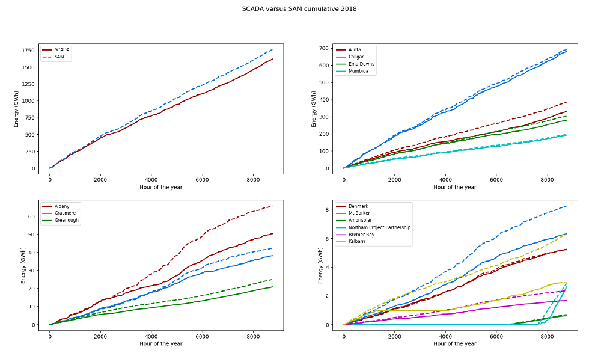

SIREN Help SIREN Help
SIREN Help SIREN HelpAll acronyms used in this help are defined in the list of acronyms
The SEN SAM simulation, SIREN, is used to calculate energy generation for renewable energy power stations. The program uses the SAM SDK API for energy calculations. SAM is provided by the NREL. This help briefly describes how to use the simulation.
Welcome to SEN's renewable energy conceptual simulation - SIREN.
The worlds renewable energy resources could provide many times the amount of fossil-fuelled energy currently used. SEN's computer simulation models an electricity network and allows you to create, cost and evaluate scenarios for supplying electricity using a mixture of renewable energy sources.
By placing virtual renewable energy plants around the area of interest, you will be able to determine the optimal locations to access renewable energy sources, minimise grid connection costs and meet the varying demand on the grid, while achieving the best in terms of efficiency, cost effectiveness and energy security.
This version of the Simulation uses the SAM SDK API for energy calculations. SAM is provided by the NREL.
The default data provided with SIREN is for the SWIS in southern WA but the program(s) have been constructed to cover any geographic area with the appropriate input files. The techniques to create the required data files is documented in Supporting Notes.
Our Definition of Sustainable Energy: “Energy that is renewable within a human lifetime and can be produced safely and equitably for all time with minimal impact on the environment and future inhabitants”. We believe this does not include nuclear power with its many unresolved issues.
Our Focus: To raise awareness of how a mix of renewable energy technologies are able to meet WA's energy needs, with a particular focus on the main electricity grid, the SWIS.
Our Computer Simulation (SIREN): To demonstrate how electricity demand on the SWIS may be met by a mix of renewable energy sources. Users are able to explore potential location and scale of renewable energy sources (stations, storage, transmission) to meet electricity demand.
At present there is a packaged version of the simulation for Windows available as a self-extracting zip file from https://sourceforge.net/projects/sensiren/ (the package has been created with PyInstaller). There are a number of files available:
siren_toolkit.exe contains the full SIREN toolkit, It contains the contents of three other files in this listsiren_application.exe contains the packaged Windows version of the SIREN applicationsiren_sample.exe contains the files and data for the sample SIREN simulation of the SWISsen_makeweather_getmerra2.exe is a package containing both getmerra2, which enables MERRA-2 files to be downloaded, and makeweatherfiles, a standalone program to produce SAM weather files. This package allows you to create SAM weather files from MERRA-2 files without requiring any other parts of SIREN. See makeweatherfiles.html)Occasionally new versions of some of the SIREN programs will be uploaded to SourceForge. You can check for new versions and download them by selecting the sirenupd option in SIREN. (Major new releases can also be indicated but these will require a complete new SIREN version to be installed.)
To install the required package you can just open/launch it and extract it to your desired location. It may be necessary to execute the program as Administrator.
It is also possible to install and run the Python programs. SIREN_Notes.html provides some guidance on how to do this.
Note: This help file may refer to individual programs either with or without the program suffix, for example sirenm, sirenm.exe or sirenm.py. You may have to use the appropriate suffix for your environment.
To enable new versions of SIREN to be installed without affecting your work a folder structure similar to the following is suggested.
| Your Folder | Extract siren_application.exe here | |||
| ... | siren | siren folders and working files | ||
| models | Repository for SIREN Models (Preferences files) | |||
| Your model | Working files for your model | |||
| ... | scenarios | Scenarios, save files, ... | ||
| weather files | SIREN weather files | |||
| Another model | Working files for your second model | |||
| ... | scenarios | Scenarios, save files, ... | ||
| weather files | SIREN weather files |
You can indicate the location of your SIREN Models in one of two ways.
"C:\..Your Folder\siren\siren.exe"
"C:\..Your Folder\siren\siren.exe" "..\models"
When setting up files and folders in your Preferences file (documented in Preferences) you can use relative addresses to point to the correct location. The addresses are relative to the siren folder. For example:
[Parents]
$user1=../Your model
...
[Files]
solar_files=$user1/weather_files
...
To execute the simulation open siren.exe in the upper folder, siren. You can easily set up a Desktop shortcut to point to the model. The package contains a number of folders with default files, some that can be replaced with your own. The location of these files are defined in a Preferences file as documented in Preferences. The default files are located in the following folders:
The first time you open SIREN (without passing a target file or folder) it will present a window titled ‘Choose location for SIREN model (preferences) files’ to allow you to choose the location for your SIREN Models. SIREN stores this location in siren_models_location.txt in a user folder and uses this as the location of the SIREN Models whenever you invoke SIREN without a target file or location. In windows the file is stored in the user's LocalAppData folder, C:\User\<user>\AppData\Local\siren\, and in Linux it is in ~/.siren/. The file contains a single line with the location of the folder respective to the siren folder. It is possible to edit the file and manually add additional folders if desired.
When you open SIREN you will be presented with a list of SIREN Models (Preferences files). Choose the SIREN Model you want by (left-) clicking on your choice. It is also possible to launch tools for the model by right-clicking on your choice - the tools are as described in Tools - or you can edit the Model file. You can sort the list presented in order of either Preferences File, SIREN Model or Date modified (last time the Preferences file was saved) by right-clicking the appropriate column header. If a Model file has a syntax error this will be identified in the SIREN Model field; editing such a file will, where possible, highlight the line in error. If you want to use a specific Preferences file you can open the simulation passing the alternate filename, or a folder, as a parameter, as in these examples:
siren.exe
siren.exe SIREN_NWIS.ini
siren.exe ../<folder>/SIREN_NWIS.ini
siren.exe ../<folder with preferences files>/
If you specify a folder you will be presented with a list of SIREN Models (Preferences files) in that folder. You can either specify the folder as the full path or relative to the siren folder. Placing your models in a separate folder will make it easier to install updates to SIREN without impacting your data files.
If you want to create a new Model press the New Model button on the start up menu. You will be presented with a small list of Properties to update to create a new Preferences file. Many of these properties relate to files and file locations as described in Setting Up. It's important to ensure they're correct for the new model to open. For the file fields click on the field to navigate to the desired file or folder. At the bottom of the Create Preferences file menu you have options to Save the new file, Save the new file and edit it, or Save it and open (launch) the new model. If you specified a folder when you opened SIREN, the new model will be saved in that folder.
When you launch a SIREN model you may receive either a warning message or a status window indicating possible issues with the Preferences file (Notes in Preferences might assist).
SIREN has a small number of menu options.
| Tools | Invoke SIREN tools. This will launch the chosen tool as a new task
| ||||||||||||||||||
| Right-click Tools |
Invoke additional SIREN tools. Right-clicking on a model will present a menu of tools, as above, plus these additional tools for the chosen model
| ||||||||||||||||||
| Help | Display some help about the program
|
The sample SIREN model for the SWIS for 2014 and 2015. The default Preferences files, SIREN.ini, is set up for this data and assumes the siren_sample folder is located in the same parent folder as the siren folder. The sample data contains:
There are some experimental features in SIREN which may or may not be further developed. These are identified within this help by a red bounding box.
The simulation uses external data files to model the potential for renewable energy generation for a geographic region. The approach is to model the data on an hourly basis for a desired year (ignoring leap days, that is, 8,760 hours). The following data files are required / desirable. Due to the initial source for each data file the format for each is different (see SIREN File Formats for further details). Please feedback any desired formats as it's relatively easy to accommodate standard file formats.
You can successfully use the simulation with just the map and weather data while existing load and network data enhance it's usefulness.
Due to inconsistency between power (SAM) and weather data / files, hours of the day are portrayed differently. For example, looking at the hour between midnight and 1:00AM:- in power data the hour is shown as the start of the hour, 00:00, while for weather data it is the end of the hour, 01:00.
The simulation has two main objects, stations and grid lines. Stations can be saved as scenarios in either an Excel (XLS) or CSV file format while grid lines are constructed during the simulation rather than being saved to a file (unless you have manually created the grid line).
Stations represent either existing generation stations on the grid or new ones you have created during a simulation session. The station files can be updated outside of the simulation. The fields for a station are:
| Station Name | The name you assigned to the station. They must be unique within a simulation session. If you add a new scenario with a station that has the same name as one already active the program will append a number to make the name(s) unique |
| Technology | One of the defined technologies:- Biomass, CST, Fixed PV, Geothermal, Offshore Wind, Rooftop PV, Single Axis PV, Solar Thermal, Dual Axis PV (Tracking PV), Wind (refer to SAM Models used by SIREN), and
Hydro, Wave and Other (refer to Other Models used by SIREN (experimental))
Note: SIREN uses two of the SAM Concentrated Solar Power models. Solar Thermal is the SAM model for Power tower concentrating solar power (molten salt and direct steam) and CST is A simple "generic model" for conventional thermal
|
| Latitude | Southern latitudes are negative |
| Longitude | Western longitudes are negative |
| Maximum Capacity (MW) | Maximum capacity of the station. This is the amount of power the station produces for export into the network
Note: In the case of PV (and biomass) SAM uses nameplate capacity as the basis for it's calculations. SIREN has been designed to use generation capacity. The PV capacity figures you input into SIREN are increased by the dc_ac_ratio to give the nameplate capacity before they are passed to SAM |
| Turbine | The type of turbine for a Wind station. The name must be either one of the turbines in the Turbine file provided by SAM or the name of a turbine power (.POW) file.
Note: When editing a Wind or Offshore station you will be presented with the list of turbines available. Initially, the list is sorted in name order. You can toggle the sort order between name order and turbine size by clicking on the Turbine: label field. |
| Rotor Diam | The rotor diameter of the turbine for a Wind station |
| Hub Height | The hub height of the turbine for a Wind station. This may be optional if the height can be derived another way such as a hub_formula property in the [Offshore Wind] or [Wind] Section of the Preferences file |
| No. turbines | The number of turbines in the wind farm |
| Area | The estimated area for the station. This is (currently) calculated by the simulation so you need not enter a value. Stations will be displayed on the map with either a square or circle representing their physical footprint (the shape can be set by setting station_shape in the [Grid] Section of the Preferences file) |
| Power File | If the technology you're interested in is not available in the simulation or you encounter problems you can provide your own power file which contains power output for each hour of the year. This can be produced using SAM itself. Within SAM you display output data, select the Hourly energy data and export the file as either CSV or Excel (XLS), and place the file in the same location as your scenario files. When the Power Model is run the program will use this data rather than invoking the SAM module for that station |
| Storage Hours | The number of hours of storage for CST and Solar Thermal stations. If the value isn't set SIREN will use the tshours property in the [CST] or [Solar Thermal] Section of the Preferences file |
| Grid Line | If you have edited the grid line for a station (see Right Mouse Click) this will record the coordinates for the grid line as a series of latitude, longitude values |
| Direction | For PV stations you can specify the direction in which the panels are facing as a character representation of the direction. Acceptable values are:- N, NNE, NE, ENE, E, ESE, SE, SSE, S, SSW, SW, WSW, W, WNW, NW or NNW. The default is N for southern latitude stations and S for northern latitude (that is, towards the midday sun) |
When you display a Station with SIREN it will also show the Scenario the Station is in. For new Stations (i.e. not Existing) it is possible to update this value to one of the other scenarios that are currently “open“. This will move the Station into that scenario and, if the scenario is saved move it permanently into that Scenario.
Grid lines connect new stations to either existing or other new grid lines. By default the grid line will connect a station to the nearest point on the grid. You can edit a grid line if you wish to connect it elsewhere in the grid. Grid lines are recalculated when you add or modify stations but are not normally saved. You can, however, list the (new) grid lines and save the table listed. The fields for a grid are:
| Name | The name of the station the grid line connects from |
| Coordinates | Coordinates for the start and end of the grid line as latitude, longitude values |
| Dispatchable | If the grid connects “dispatchable” technology this will be set to Y |
| Initial | If the grid line is part of the initial (existing) grid and the information is available this will display the capacity in kV for the line |
| Length | The length of the grid line |
| Line Cost | The estimated cost of the grid line. This is based upon the length and type of line(s) |
| Line Table | This describes the type and number of grid line types for this line. A grid line in the simulation may represent a number of different grid lines to enable the peak load to be carried. The grid line types are described below |
| Peak Dispatchable | The sum of capacities for dispatchable stations connected to/by this grid line |
| Peak Load | The sum of capacities for all stations connected to/by this grid line |
| Peak Loss | An estimate of the peak loss for the line. This is calculated by applying the grid loss value to the sum of all station capacities connected to/by this grid line |
| Substation Cost | There are a range of costs related to the infrastructure at both ends of the line. We'll use the term substation_costs to embrace all these costs. Each line that ultimately ends up reaching the load centre will have a peak load for all stations that follow that particular path to the load centre. These lines will have substation costs based upon the peak load. The costs will/may be allocated across all stations in the path |
A grid is built up of a number of different types of line to enable differing loads to be carried. Each line has a maximum carrying capacity. Greater loads require additional lines to be added; so in this simulation one line may represent multiple grid lines as described in the Line Table for the line. For dispatchable transmission we need an extra path for backup purposes (N-1) while no such backup is required for non-dispatchable loads (N-0). For a line carrying both we'll use a criteria of N-0 for total load plus N-1 for dispatchable load. Within this simulation line types and costs can be specified (somewhat cryptically) in the [Grid] Section of the Preferences file. The default set of lines are:
| non-Dispatchable | Dispatchable | |||||
|---|---|---|---|---|---|---|
| Power range (MW) | Line Type(s) | Cost per Km | Substation Cost | Line Type(s) | Cost per Km | Substation Cost |
| 0 - 250 | 220_s | $0.6M | $7.0M | 220_d | $0.9M | $8.0M |
| 250 - 500 | 330_s | $1.0M | $8.0M | 330_d | $1.5M | $10.0M |
| 500 - 1,000 | 330_d | $1.5M | $10.0M | 330_d + 330_s | $2.5M | $18.0M |
| 1,000 - 1,500 | 330_d + 330_s | $2.5M | $18.0M | 330_d x 2 | $3.0M | $20.0M |
Above 500MW it's a case of alternately adding 330_s and 330_d costs.
Many options can be specified by a Preferences file. When you open SIREN you will be presented with a list of available Preferences files (SIREN Models) to choose from. These files reside in the same folder as SIREN itself (they may be placed in a different folder by passing that folder as a parameter when SIREN is invoked). The format is similar to a Windows INI file. If you want to create a new Model you can press the New Model button on the start up menu. You will be presented with a small list of Properties to update to create a new Preferences file.
The Preferences file has the following Sections and properties. The file is a simple text file which must be saved in the siren folder and have a file type of .ini (INI File). The sample siren_default.ini or siren_windows_default.ini file will provide a useful guide as to the content.
There are three special strings which will be replaced in the Files properties variables:
Note: Technologies appear in two forms in the Preferences file. They appear in the Preferences Sections as words starting with an uppercase letter and separated by spaces (e.g Fixed PV with the Section name [Fixed PV]). In the Section Properties the technology names are changed to all lower case and spaces are replaced by underscores. Thus, Fixed PV will appear as fixed_pv. The lower case versions occur in the [Colors] Section and [Grid] dispatchable, [Power] fossil_technologies, and [Power] technologies variables.
(Skip to Menus)
Shortcut to Sections:- Backtrack PV, Base, Biomass, Colors, CST, Dataview, Dual Axis PV, Files, Financial, Fixed PV, Flexiplot, Fossil Coal, Fossil Cogen, Fossil Gas, Fossil Mixed, Geothermal, Grid, Hydro, Map, Offshore Wind, Other, Parents, Plot Colours, Power, Powermatch, Powerplot, PV, Rooftop PV, SAM Modules, Single Axis PV, Solar Thermal, Storage, View, Wave, Wind, Windows.
| Section | Properties | ||||||||||||||||||||||||||||||||||||||||||||||||||||||||||||||||||||||||||||||||||||||||||||||||
|---|---|---|---|---|---|---|---|---|---|---|---|---|---|---|---|---|---|---|---|---|---|---|---|---|---|---|---|---|---|---|---|---|---|---|---|---|---|---|---|---|---|---|---|---|---|---|---|---|---|---|---|---|---|---|---|---|---|---|---|---|---|---|---|---|---|---|---|---|---|---|---|---|---|---|---|---|---|---|---|---|---|---|---|---|---|---|---|---|---|---|---|---|---|---|---|---|---|
| [Backtrack PV] | Specifics on Backtrack PV characteristics. Properties are:
| ||||||||||||||||||||||||||||||||||||||||||||||||||||||||||||||||||||||||||||||||||||||||||||||||
| [Base] | Base properties are:
| ||||||||||||||||||||||||||||||||||||||||||||||||||||||||||||||||||||||||||||||||||||||||||||||||
| [Biomass] | Specifics on Biomass characteristics. Properties are:
| ||||||||||||||||||||||||||||||||||||||||||||||||||||||||||||||||||||||||||||||||||||||||||||||||
| [Colors] | Colours for things. It is possible to have different colours for different maps by appending the map_choice value to Colors, e.g. [Colors1]. It is possible to edit colours and save the changes via a menu option. Standard colours are:
white, black, red, darkRed, green, darkGreen, blue, darkBlue, cyan, darkCyan, magenta, darkMagenta, yellow, darkYellow, gray, darkGray, lightGray and transparent; or you can use #rrggbb to specify red-green-blue HTML colour shades. Colour properties are:
There are colours for each of the energy technologies:
There are colours used for the electricity grid transmission lines. The values are in part defined by the elements of the grid KML files as described in SIREN File Formats:
There are colours used for the resource grids:
There are colours used for non-technology chart items:
| ||||||||||||||||||||||||||||||||||||||||||||||||||||||||||||||||||||||||||||||||||||||||||||||||
| [CST] | Specifics on CST characteristics. Properties are:
| ||||||||||||||||||||||||||||||||||||||||||||||||||||||||||||||||||||||||||||||||||||||||||||||||
[Dataview] (experimental) |
Options for Data View. Properties for individual files (columns, file, grid, maximum, percentage, period, chart (plot), series, sheet, title, xlabel, xvalues, and ylabel; marked with an asterisk, *, below) can be repeated a number of times to allow a history of recent files to be accessed. These are suffixed with a number. Properties are as follows:
| ||||||||||||||||||||||||||||||||||||||||||||||||||||||||||||||||||||||||||||||||||||||||||||||||
| [Dual Axis PV] or [Tracking PV] |
Specifics on Dual Axis PV (or Tracking PV) characteristics. Properties are:
| ||||||||||||||||||||||||||||||||||||||||||||||||||||||||||||||||||||||||||||||||||||||||||||||||
| [Files] | Files and directories. You can either specify the folder as the full path or relative to the siren folder (not the folder the Preferences file resides in). Properties are:
| ||||||||||||||||||||||||||||||||||||||||||||||||||||||||||||||||||||||||||||||||||||||||||||||||
| [Financial] | Financial options. When running the financial Power Models you will be presented with this list of properties. They can be altered and saved. Properties are:
| ||||||||||||||||||||||||||||||||||||||||||||||||||||||||||||||||||||||||||||||||||||||||||||||||
| [Fixed PV] | Specifics on Fixed PV characteristics. Properties are:
| ||||||||||||||||||||||||||||||||||||||||||||||||||||||||||||||||||||||||||||||||||||||||||||||||
[Flexiplot] (experimental) |
Options for Flexiplot. Properties for individual files (columns, file, grid, maximum, percentage, period, chart (plot), series, sheet, title, xlabel, xvalues, and ylabel; marked with an asterisk, *, below) can be repeated a number of times to allow a history of recent files to be accessed. These are suffixed with a number. Properties are as follows:
| ||||||||||||||||||||||||||||||||||||||||||||||||||||||||||||||||||||||||||||||||||||||||||||||||
| [Fossil Coal] | Specifics on Fossil Coal characteristics. Properties are:
| ||||||||||||||||||||||||||||||||||||||||||||||||||||||||||||||||||||||||||||||||||||||||||||||||
| [Fossil Cogen] | Specifics on Fossil Cogeneration characteristics. Properties are:
| ||||||||||||||||||||||||||||||||||||||||||||||||||||||||||||||||||||||||||||||||||||||||||||||||
| [Fossil Gas] | Specifics on Fossil Gas characteristics. Properties are:
| ||||||||||||||||||||||||||||||||||||||||||||||||||||||||||||||||||||||||||||||||||||||||||||||||
| [Fossil Mixed] | Specifics on Fossil Mixed fuel characteristics. Properties are:
| ||||||||||||||||||||||||||||||||||||||||||||||||||||||||||||||||||||||||||||||||||||||||||||||||
| [Geothermal] | Specifics on Geothermal characteristics. Properties are:
| ||||||||||||||||||||||||||||||||||||||||||||||||||||||||||||||||||||||||||||||||||||||||||||||||
| [Grid] | Grid properties are:
| ||||||||||||||||||||||||||||||||||||||||||||||||||||||||||||||||||||||||||||||||||||||||||||||||
[Hydro] (experimental) |
Specifics on Hydroelectric power characteristics (experimental). Properties are:
| ||||||||||||||||||||||||||||||||||||||||||||||||||||||||||||||||||||||||||||||||||||||||||||||||
| [Map] | Details on the map including geographic boundaries. Properties are:
| ||||||||||||||||||||||||||||||||||||||||||||||||||||||||||||||||||||||||||||||||||||||||||||||||
| [Offshore Wind] | Specifics on offshore wind and turbine spacing. Properties are:
| ||||||||||||||||||||||||||||||||||||||||||||||||||||||||||||||||||||||||||||||||||||||||||||||||
[Other] (experimental) |
Specifics on another technology as defined by you (experimental). You can cater for different technologies by appending a suffix to Other, e.g. [Other1]. Refer to Other Models used by SIREN (experimental) for more details. Standard Properties are:
| ||||||||||||||||||||||||||||||||||||||||||||||||||||||||||||||||||||||||||||||||||||||||||||||||
| [Parents] | Enables parent directories to be specified and substituted in the [Files] properties. The variables must be in lower case. They will also allow a single level of substitution of other parent variables, for example, $dir2=$dir1/.... It is suggested they have an unusual character, such as $, to avoid valid values being substituted
| ||||||||||||||||||||||||||||||||||||||||||||||||||||||||||||||||||||||||||||||||||||||||||||||||
| [Plot Colors] | Colours for Powerplot. These may be populated from the other Colors Sections | ||||||||||||||||||||||||||||||||||||||||||||||||||||||||||||||||||||||||||||||||||||||||||||||||
| [Power] | What processing, output and charts to produce for power model processing. Properties are True or False. Power options can be changed and saved when the Power Models menu option is selected. Properties are:
| ||||||||||||||||||||||||||||||||||||||||||||||||||||||||||||||||||||||||||||||||||||||||||||||||
| [Powerplot] | Options for Powerplot. Properties for individual files (columns, file, grid, maximum, percentage, period, chart (plot), sheet, spill_label, target, and title; marked with an asterisk, *, below) can be repeated a number of times to allow a history of recent files to be accessed. These are suffixed with a number. Properties are as follows:
| ||||||||||||||||||||||||||||||||||||||||||||||||||||||||||||||||||||||||||||||||||||||||||||||||
| [Powermatch] | Filenames, worksheet names and other variables used by Powermatch. Properties are:
| ||||||||||||||||||||||||||||||||||||||||||||||||||||||||||||||||||||||||||||||||||||||||||||||||
| [PV] | Specifics on PV characteristics. Properties are:
| ||||||||||||||||||||||||||||||||||||||||||||||||||||||||||||||||||||||||||||||||||||||||||||||||
| [Rooftop PV] | Specifics on Rooftop PV characteristics. Properties are:
| ||||||||||||||||||||||||||||||||||||||||||||||||||||||||||||||||||||||||||||||||||||||||||||||||
| [SAM Modules] | SAM models (modules) and default variables for each technology currently implemented. The variables files can be either a CSV or Excel (XLS or XLSX) file. Properties are as follows.
Note: SIREN is using SSC Version 206 which has created some changes to the default variables for ippppa, geothermal, tcsgeneric_solar and tcsmolten_salt. The variable files for these models provided by SIREN have a suffix of _206. You may need to adjust these variables in older SIREN Preferences files. SIREN has also successfuly been used with Version 209 (2018-11-11), Version 267 (2021-12-02), Version 278 (2022-11-21)
| ||||||||||||||||||||||||||||||||||||||||||||||||||||||||||||||||||||||||||||||||||||||||||||||||
| [Single Axis PV] | Specifics on Single Axis PV characteristics. Properties are:
| ||||||||||||||||||||||||||||||||||||||||||||||||||||||||||||||||||||||||||||||||||||||||||||||||
| [Solar Thermal] | Specifics on Solar Thermal characteristics. Properties are:
| ||||||||||||||||||||||||||||||||||||||||||||||||||||||||||||||||||||||||||||||||||||||||||||||||
| [Storage] | Specifics on (generic) storage characteristics. Properties are:
| ||||||||||||||||||||||||||||||||||||||||||||||||||||||||||||||||||||||||||||||||||||||||||||||||
| [View] | Default view options. Often these are True or False values that can be “toggled” in the model. Properties are:
| ||||||||||||||||||||||||||||||||||||||||||||||||||||||||||||||||||||||||||||||||||||||||||||||||
[Wave] (experimental) |
Specifics on Wave characteristics (experimental). Properties are:
| ||||||||||||||||||||||||||||||||||||||||||||||||||||||||||||||||||||||||||||||||||||||||||||||||
| [Wind] | Specifics on Wind and turbine spacing. Properties are:
| ||||||||||||||||||||||||||||||||||||||||||||||||||||||||||||||||||||||||||||||||||||||||||||||||
| [Windows] | Provides options to remember window layouts between sessions. If active these values are updated by SIREN when windows are closed. Windows will be restored as close as possible to their previous position. Properties are:
|
The menus allow you to interact with the full simulation while right-clicking the mouse allows you to interact at the detail of an individual station. The majority of the menu options have a keyboard shortcut. The layout of the menus are set out below (Note: Sometimes the menu options will disappear from the menu bar. The easiest solution is to maximise the main window and then restore it to it's normal size)
| Scenario | Work with scenarios. It is possible to edit the scenarios outside of the simulation as they are simple CSV or Excel (XLS) files. The type of file is indicated by the file type - .csv for a CSV file, or .xls or .xlsx for an Excel file. If the file type isn't specified any scenario will be saved in Excel format.
|
||||||||||||||||||||||||||||||||||||||||||
| Power | Run SAM models for the current model or list details on new infrastructure in the model
|
||||||||||||||||||||||||||||||||||||||||||
| View | Modify the view of certain elements of the simulation. Those identified with a tick icon can be toggled on or off
|
||||||||||||||||||||||||||||||||||||||||||
| Preferences | Edit or display aspects of the Preferences file. Changes for some variables will take effect immediately on exit from the edit program while others (such as the map) will require you to restart the simulation
|
||||||||||||||||||||||||||||||||||||||||||
| Windows | Display additional (floating) windows. These windows can be opened and still allow interaction with the main SIREN window. if restorewindows is set SIREN will remember the placement of windows and restore them as closely as possible to these positions when they are next opened.
|
||||||||||||||||||||||||||||||||||||||||||
| Tools | Invoke SIREN tools. This will launch the chosen tool as a new task
|
||||||||||||||||||||||||||||||||||||||||||
| Help | Display some help about the program
|
Clicking the right mouse button allows various actions for the nearest station. Dependent on the nearest station some options will not be available. The full list is as follows:
 Run SAM Model Run SAM Model |
Run SAM Power Model for nearest station |
 Model Power for year Model Power for year
...years(s) |
Run the SAM Power Model for nearest station for one of the years available |
 Copy station Copy station |
Copy nearest station. After selecting this option and updating any changed details move the mouse to the new location and press the left mouse button to locate the new station |
 Centre view Centre view |
Centre view on nearest station |
 Show/Edit details Show/Edit details |
Show details for nearest station. If it is a new (i.e. not an existing) station you can also edit the stations details |
 Move Move |
Move nearest station. After selecting this option move the mouse to the new location and press the left mouse button to relocate the station |
 Delete Delete |
Delete nearest station |
| Edit grid line for station | Edit Grid line for station at (this) location. This option allows you to override the default process of connecting the grid line to the nearest existing grid line. By clicking the left mouse button you can indicate where you want the grid line to be positioned; each click adds a new leg to the grid line; double-clicking terminates the edit and connects the grid to the (now) nearest grid line |
 Trace grid for station Trace grid for station |
Trace Grid for station at (this) location. This option will trace the grid connection between the station and the (nearest) load centre |
 Add station Add station |
Add station at (this) location |
| Show details for nearest grid line |
The nearest grid line will be highlighted and some details displayed in the Status line. Details will include the line name, length, an indication if it carries Dispatchable generation, and the peak load on the line |
 Show Zone for here Show Zone for here |
Display the zone for the chosen location |
 Show weather for here Show weather for here |
Present a menu to allow you to chart weather values (DHI, DNI, GHI, temperature, wind speed) for this location. You select the weather values you want to display and one of a series of charts to display either by hour or the average for a period. There is also an option to display chosen charts one at a time or all together, that is, display them all and allow you to navigate between them |
| Weather for year
...years(s) |
Show weather here for one of the years available |
 Show details Show details |
Show details for nearest town |
 Position ruler here Position ruler here |
Position ruler here. Position will be approximate |
 Position legend here Position legend here |
Position legend here. Position will be approximate |
The simulation allows you to build scenarios for the energy mix for your area of interest. It is based around the map of your chosen area and allows you to visualise the layout of the existing electricity network plus the additional stations you place on the map to build your scenario(s). The map initially shows the main skeleton of the existing electricity grid infrastructure and current generation stations.
To add a new station simply right-click on the map at the desired location and then update the details for the station (Name, Technology, Capacity and so forth) and press Save & Exit. You can also copy an existing station and other options as specified above.
As you build your scenario, the simulation adds additional infrastructure to connect the new generation plants to the grid. The colours for the majority of the items on the map are as you specify in the Preferences file. You navigate around the map using normal mouse movements to scroll, zoom, etc. and interact with it as described previously (Menus). Using the various menu options you can model your whole scenario, or by right-clicking you can deal with an individual station. There are a number of additional windows, such as menu options, that can be opened to assist with using SIREN (see Windows)
You can save multiple scenarios and add them and remove them as you wish. When you exit the simulation normally or Save scenarios (Ctrl+S) any modified scenarios will be saved. When you add new stations to your model they will be added as a new scenario which includes the date and time in its name, for example, Scenario_2015-06-09_1000. You can save all open scenarios as a single new scenario by using the Save As... option.
The strength of the simulation is in running the SAM Power Models (e.g. Ctrl+P). This will run the appropriate SAM model for each station you have chosen or for all renewable stations in your current simulation. SAM calculates a list of power outputs for each hour of the year (8,760 points). If the show_menu property is True you will be presented with a menu to specify what processing and charts to produce (see Power Model Options below). If you choose to run the Financial Models or Powermatch you will be presented with an additional menu of options.
Usage Notes:
With increasing hub heights associated with larger turbines the SAM models are impacted by the lack of suitable wind speed data at greater heights. The MERRA-2 climate data has a maximum wind speed height of 50 metres which will cope with hub heights up to 85 metres (above that height the SAM windpower model will fail with an error - “... the closest wind speed measurement height (50 m) found is more than 35 m from the hub height specified”). To overcome the wind data limitation SIREN can extrapolate wind speeds to greater heights. To enable this you can use the hub_formula property of the [Wind] and [Offshore Wind] Sections of the Preferences file. This formula can be used to calculate a hub height (for rotor lengths greater than 85) and to extrapolate wind speed using either of two commonly used laws (models). The law to be used can be specified in the extrapolate property of the appropriate wind Section(s) and can be either logarithmic, the default, or Hellmann. This additional data will be added to the normal wind file and passed to the SAM windpower model. If you wish to use this you need update the windpower variables file to allow the default hub height (85 m) to be overridden.
From ‘Do we really need rotor equivalent wind speed?’ (Van Sark etal, https://onlinelibrary.wiley.com/doi/full/10.1002/we.2319#:~:text=For%20situations%20where%20the%20ratio,and%20the%20wind%20speed%20at) a possible formula for calculating hub height is - H = 0.789 D + 14.9 m. For the hub_formula property this can be set as:
hub_formula=int(floor((0.789 * rotor + 14.9) / 5) * 5)
SIREN will replace rotor with the rotor diameter for the station turbine and perform the calculation which will round the calculated hub height down to the nearest 5 metres. You can of course just set hub_formula=90 to set a fixed height
Discussions on the two wind profile laws can be found at Wind profile power law (aka Hellmann law) and Log wind profile (aka logarithmic law). The Hellmann law tends to give slightly higher wind speeds. ‘Methodologies Used in the Extrapolation of Wind Speed Data at Different Heights and Its Impact in the Wind Energy Resource Assessment in a Region’ (https://www.researchgate.net/publication/221912731_Methodologies_Used_in_the_Extrapolation_of_Wind_Speed_Data_at_Different_Heights_and_Its_Impact_in_the_Wind_Energy_Resource_Assessment_in_a_Region) provides a fuller discussion on the topic.
The Power Model options menu are as set out here. The default values are specified in the [Power] Section of the Preferences file. The associated property is indicated in brackets at the end of the description. If you hover over the window title bar or press F1 a help for the Options will be displayed.
| Check / Uncheck all | A button to check or uncheck all option buttons |
| Show in Plot | Choose what to show in the charts |
| Generation - use actual generation figures | Use actual generation figures rather than invoking a SAM module. For example, you may have actual generation (e.g. SCADA) data that you wish to use rather than using a SAM model (actual) |
| Generation - total (cumulative renewables) | Include a cumulative curve for renewables (cumulative) |
| Generation - from chosen stations | Display charts for individual stations. An option to to select any number of individual stations to process. This will cause an additional menu to be presented after you press the Proceed button (by_station) |
| Generation - adjust generation | This option allows you to adjust the generation figures for either technologies or specific stations by a defined multiplier of between 0 and the defined adjustment cap. The cap is set by the adjust_cap property in the [Power] Section of the Preferences file; the default is 25 times. The option multiplies the figures calculated by SAM to enable analysis of changes to the technology mix to the overall simulation result without having to modify individual station(s). See Adjust Generation (below) for further details (adjust) |
| Generation - show Load | Display network load on charts (show_load) |
| Generation - show shortfall from Load | Display shortfall of network load not met by renewable generation (shortfall) |
| Generation - reduce generation by grid losses | Reduce calculated generation by the amount of grid losses (substation and transmission losses) (grid_losses) |
| Add Existing Rooftop PV to Load (Gross Load) | Create additional load curve which includes Rooftop PV. This increases the Load curve by the amount of Rooftop PV in an attempt to simulate it's contribution to load reduction (gross_load) |
| Growth options | Options to set an annual load (demand) growth target and project a number of years into the future. This takes the existing load and increases it by the specified percentage for the number of years into the future. If you specify zero growth and a (future) year which has a load file the program will use that load file |
| Storage | Options related to (generic) storage within the network |
| Storage Capacity | Options to specify how much storage is in the network, in GWh, and the initial capacity. Generation over Load will be added to storage up to this figure while generation shortfall will be met from storage until it is exhausted |
| Discharge cap | Options to specify the maximum amount of storage in MW(h) that can be added to address generation shortfall and the losses incurred in using this storage |
| Recharge cap | Options to specify the maximum amount of excess generation in MW(h) that can be added to storage and the losses incurred in adding this to storage |
| Choose charts | Choose what charts to show. All charts are based upon the full year of data. Energy by options produce a step chart of generation for the chosen time frame; Power - daily average options produce a line graph of the average 24 hour period for the chosen time frame. |
| Save chart data | This option will enable the data values for most of the charts to be saved to a spreadsheet (save_chart) |
| Visualise generation - period & delay (secs) | This option will visualise generation by displaying variable generation circles for each station over the chosen periods (visualise) |
| Show generation as a percentage of load | Where possible display (renewable) percentage of load within the chart title (show_pct) |
| Maximise Plot windows | Plots will display at maximum window size (maximise) |
| Show charts one at a time | If checked chosen charts will be displayed one at a time, otherwise where possible they will be displayed all together, that is, display them all and allow you to navigate between them (block) |
| Energy by day | Display charts of daily results, that is, a figure for each day (by_day) |
| Energy by month | Display charts of monthly results, that is, a figure for each month (by_month) |
| Energy by season | Display charts of seasonal results, that is, a figure for each season (by_season) |
| Energy by period | Display charts of 6 month seasonal results. It is possible to specify any number of months (by_period) |
| Power by hour | Display charts of hourly results (hour) |
| Power - diurnal profile | Display charts of average 24 hour period for the full year (total) |
| Power - diurnal profile by month | Display charts of average 24 hour period for each month (month) |
| Power - diurnal profile by season | Display charts of average 24 hour period for each season (season) |
| Power - diurnal profile by period | Display charts of average 24 hour period for the two periods (period) |
| Power - Load duration | Display load duration curves (duration) |
| Power by hour - augmented | Display charts of hourly results showing renewable generation with shortfalls filled by storage and augmented generation (augment) |
| Power - Shortfall analysis | Display additional shortfall charts and data to assist detailed analysis of generation shortfall. If this option is chosen with 0 analysis iterations it will display a table of shortfall and excess generation and, if storage is chosen, storage usage and balance (shortfall_detail) |
| Choose tables | Choose what tables to present |
| Show Summary/Other Tables | Present a brief summary table of Capacity and Output for each selected station (summary) plus other tables dependent on options chosen |
| Generation by Zone | If a zones file is defined choosing this option will cause generation figures to be calculated by zone (save_zone) |
| Save Hourly Data Output | Save the hourly data for each renewable station. This is the hourly output calculated by the SAM model (save_data) |
| Save (adjusted) Hourly Data Output by Station | Save adjusted data outputs produced by the model for each station and other options (save_detail) |
| Save Hourly Data Output by Technology | Save adjusted data outputs produced by the model for each technology and other options (save_tech) |
| Save Powermatch Inputs | Save the input data for Powermatch (or Powerbalance). If you check this option it will check two options that are required for Powermatch (‘Generation - show Load’ and ‘Generation - reduce generation by grid losses’). (save_match) |
| Run Financial Models | Run SAM financial models on the power results for each station and produces a summary table showing additional financial outputs (financials) |
| Proceed, Save Options / Do Financials |
At the bottom of the menu is the Proceed button. If the button is not visible use the scroll bar to navigate down the table. You can invoke the menu multiple times to specify different growth options, storage options and plots. The first display of the menu gives the option to Save the options for future sessions; this writes the updated options to the Preferences file. To exit this phase of processing press the All Done or Do Financials button |
The charts and tables are intended to assist with analysing the chosen scenario.
| Detail | The choices are:
|
| Period | This row provides pull-down menus to allow you to choose a period, day and hour to visualise |
| < > | You can also navigate to a particular time period by dragging the slider bar. Clicking < will step back one period while > steps forward one period. You can also use Page Down and Page Up to step forward and back |
| Save Views | If the save_view property of the [Power] section is True you will be able to save individual views of the visualised generation. When you first set an increment value you will be presented with an option to specify a location for the saved files. The files will be saved in the chsoen location with a filename equal to the chosen value plus an indication of the period it relates to. This will enable you to create a video of the sequence using an appropriate tool. You set the total number of files (views) to be saved and each iteration of the visualisation will save a file and decrement the counter until it reaches zero |
| Repeat Loop | If checked this option will cause the visualisation to repeat continuously |
| Period Loop (secs) | You can also cause the visualisation to automatically loop through all time periods. The number field allows you to specify the delay in seconds between each period - between 0 and 10 in .2 second increments. You press the Loop button to start the loop. Press Stop (or the Power -> Exit Visualise, Ctrl+Z, menu option) to stop the loop. |
| Quit | Exit the visualisation |
Plot Navigation
The tool used to produce the charts, matplotlib, has a navigation toolbar (Interactive navigation) to enable you to navigate and manipulate the chart (but doesn't allow you to change the chart data). It includes options to zoom into an area of the chart and to save the chart image (by default to the scenarios folder). By default the size of charts produced is determined by matplotlib, or by the Maximise Plot windows option (above). By using the orientation, papersize, and save_format Properties of the [Power] section it is possible to produce the charts in a number of formats, such as PDF format, and in a specific page size and layout. If you use these options you can save charts in a standardised format (these Properties can be added and removed by using the Preferences -> Edit Section menu option).
For most charts the Pan/Zoom option ( ) enables you to zoom in on the chart using the right mouse button and to pan across the chart using the left mouse button.
) enables you to zoom in on the chart using the right mouse button and to pan across the chart using the left mouse button.
For the two hourly charts (Power by hour and Power by hour - augmented) and charts produced by Powerplot there is a modified pan and zoom feature to enhance visual examination of the chart:
Note: For cumulative (stacked) charts produced by Powerplot this feature may perform slowly so please be a little patient
powerplot is a standalone program that will produce either hourly, half-hourly or diurnal charts from a spreadsheet that conforms to certain constraints. It is intended to be used to chart (detailed) results either from Powermatch or some of the files produced by SIREN's PowerModels.
The spreadsheet must have:
| Recent Files | A pull-down list of recent spreadsheets. Click on the desired spreadsheet to choose a different one from the list. The list will be ordered in terms of most recently accessed first (file_history) |
| File | Click on this field to choose the desired spreadsheet (file) |
| Sheet | A pull-down list to enable you to choose the desired worksheet (sheet) |
| Period(s) | A pull-down list for a full year, a month or other defined seasons or periods that may be defined in the Preferences file. If an option other than <None> is chosen the resulting chart will present an average diurnal chart for the chosen period (period). If the first period is a month a second pull-down list allows you to choose an ending month range. This can either be a later month in the year or, if earlier than the first value, months will wrap to the start of the year. For example, Period 1 of Nov and Period 2 of Feb will correlate Nov, Dec, Jan and Feb (period2) |
| Target | A pull-down list of column names. If the chart is intended to show how the chosen columns meet a target column, typically Load, this enables you to choose that column. Choosing <None> means no target field. If a target field is chosen the chart will show excess generation as lightly shaded areas above the target values (target)
A target is required for Contribution and Correlation |
| Overlay | This option allows the total of energy used to recharge storage to be shown as an overlay on the chart; it provides an indication of how and when excess energy has been used for recharge. If a Target, e.g. Load, is chosen the target values will be added to the figure to indicate the use of excess energy above the target. It presents a pull-down list of options. At present the only options are <none> and Charge (overlay) |
| Title | Specify a title for the chart. There are two special strings which will be replaced in the title:
|
| Maximum | You can specify a maximum value for the Power (y) axis. This allows you to produce a series of charts with the same scale (maximum) |
| Type of Plot | The type of chart to be produced. Options are Bar Chart, Cumulative, Heat Map, Line Chart and Step Chart. Bar Chart, Cumulative and Step Chart produce cumulative (stacked) charts and have filled areas by technology (or Columns). A Step Chart is similar to a Bar Chart but does not have spaces between the hourly bars; also it is a lot faster to display than a Bar Chart (a Bar Chart is not recommended for hourly charts). If a Target field (e.g. Load) is chosen the area above the Target value (i.e. excess generation) in the Cumulative and Step chart have a lightly shaded value (the degree of shading is chosen by the alpha property in the [Powerplot] Section of the Preferences file). A Heat Map visualises the total value of chosen columns to indicate the highest through lowest values of the range or, if a target column is chosen, an indication of how the total value meets the target value. Each “square” or “cell” of the map represents an hour; the vertical axis is hours in a day and the horizontal axis is days for the chosen period (plot) |
| Percentage | Checking this option will produce a percentage (stacked) curve. The chart will have filled areas showing the percentage of generation for each technology. It is recommended to not set a Target field (i.e. set it to <None>) as this will merely remove the Target field (and it's data) from the chart (percentage) |
| Spill label | Use this to set a suffix for Legend entries for spilled energy. If the field is blank no spilled energy labels will appear in the Legend (spill_label) |
| Show Grid | The gridlines to be included on the chart. Options are Both, Horizontal, Vertical and None. The default is None (grid) |
| Column Order | To produce the chart you select those columns to be included. This field consists of two tables (lists) of columns. Those in the left hand list will be included in the chart while those on the right will be excluded. The included columns will be charted in the chosen order. You can drag individual or a number of columns between the two lists to get the desired configuration. The chart colour for the column will be displayed as the background color for the column (columns)
Contribution or Correlation will be performed between the target and each of the chosen columns |
| Done, Plot, Colours, Co..., Help | At the bottom of the window are a number of buttons:
|
flexiplot is a standalone program that can be used for “prototyping” a more conventional Excel spreadsheet where data is arranged in rows or columns. The program is very much experimental. If it proves useful it may be included as part of powerplot in the future. The program has a similar window of options to powerplot with the exception of Period and Target. The default values are specified in the [Flexiplot] Section of the Preferences file. It has a number of options that differ to powerplot.
| Open File | Pressing this button will open the current file to assist in setting the Series and X Values ranges |
| Series, Show Series | The location of the data series to be charted. The range is specified as either Excel columns and rows, e.g. B1:H1, or as four numbers defining the row and columns range, e.g. 1,2,1,7. The series can either be in rows or columns but is expected to be a single row (as in the examples) or column. You then choose which series you want charted by moving them in the Column Order lists (series). Pressing the Show Series button will display the current series values in a table |
| Series Label | The label for the Series (y values) (ylabel) |
X Values, Show X values
| The data values to be charted. The range is specified as either Excel columns and rows, e.g. A2:A29 or as four numbers defining the row and columns range, e.g. 2,1,2,29. The series can either be in rows or columns but is expected to be a single row or column (as in the examples). The first column (A) is taken as the X labels and the data series chosen will be charted (xvalues). Pressing the Show X values button will display the first column/row of the current X values in a table | |
| X Label | The label for the X Axis (x values) (xlabel) |
| Preferences | In addition to the buttons in powerplot, flexiplot has a Preferences button to allow you to update the Flexiplot preferences. This allows you to adjust text sizes and the like, however, some values, such as details for an individual file, may be ignored for the active file.
|
flexiplot has a number of options to:
Note: Implementation of the SAM Financial models in SIREN is a work in progress. If you have suggestions on how you would like SIREN to be extended in this area contact siren@sen.asn.au.
If you have chosen to run the Financial models you will be presented with an additional options menu as set out here. The default values are specified in the [Financial] Section of the Preferences file. The associated property is indicated in brackets at the end of the description. If you hover over the window title bar or press F1 a help for the Options will be displayed.
| Analysis period (years) | (analysis_period) |
| Federal tax rate (%) | (federal_tax_rate) |
| Real discount rate (%) | (real_discount_rate) |
| Inflation rate (%) | (inflation_rate) |
| Insurance rate (%) | (insurance_rate) |
| Loan term (years) | (loan_term) |
| Loan rate (%) | (loan_rate) |
| Debt percentage (%) | (debt_fraction) |
| Federal depreciation type | 2=straight line (depr_fed_type) |
| Depreciation straight-line term (years) | Federal depreciation straight-line term in years (depr_fed_sl_years) |
| Salvage value percentage (%) | (salvage_percentage) |
| Minimum required DSCR (ratio) | (min_dscr_target) |
| Minimum required IRR (%) | (min_irr_target) |
| Commercial PPA (on), Utility IPP (off) | IPP option - Utility IPP or Commercial PPA (market) |
| Minimum DSCR required? | (min_dscr_required) |
| Positive cash flow required? | (positive_cashflow_required) |
| Optimise LCOE with respect to debt percent? | (optimize_lcoe_wrt_debt_fraction) |
| Reduce power by Grid losses? | Reduce the power passed to the financial model by the amount of grid losses. This will slightly increase LCOE. If chosen this will reduce power by losses related to the line connecting the station into the grid. To reduce power by losses for the full grid path length to the load centre you need to also choose the Include full grid path ... option (below) |
| Include Grid costs in LCOE? | Increase station costs by the line costs to connect the station to the grid. This only includes the cost of the line to connect the station into the main grid and for the capacity of the station |
| Include full grid path in LCOE? | Increase station costs by the line costs to connect the station to the grid. This includes the cost of the line to connect the station to the load centre for the capacity of the station. This option may over-inflate grid costs as each station path to the load centre is traced individually |
| Proceed, Save Options, All Done | At the bottom of the menu is the Proceed button. If the button is not visible use the scroll bar to navigate down the table. You can also Save the options for future sessions; this writes the updated options to the Preferences file. The model will allow multiple iterations of the financial models. Use the All Done button to exit financial model processing |
Running the SIREN models will produce hourly generation figures which identify generation shortfalls and excesses against load (demand). One of the outputs from SIREN is a table of these generation shortfalls which could be met by storage (charged by surplus renewable generation) and dispatchable energy generation. The Powermatch (powermatch) component of SIREN can be used to match generation with demand (load) to quantify and cost this dispatchable energy generation, storage and CO2-e emissions. This enables you to complete a costed renewable energy scenario. If the input data spreadsheet has zones (of generation) the calculations will be performed for each zone.
One of the outputs from Powermatch is calculated Levelised Cost figures for each Generator, LCOG, and Storage, LCOS, and an overall LCOE. The Levelised Costs are calculated based upon either Capital (Capex), Operations (Opex) and fuel costs or a Reference LCOE and Reference Capacity Factor (CF) for the generator or storage. Be aware that if a facility is not used it will have no costs associated with it (this is based upon the premise that the facility would not be included in any detailed modelling). Surplus - spilled or curtailed - generation is normally used in the calculation of the (overall) LCOE. You can choose to ignore this in calculating the LCOE. The default, and recommendation, is to include the surplus (adjusted_lcoe)
Note: The SIREN Powermatch component was in part inspired by the Powerbalance worksheets developed by Ben Rose. For those who would prefer his spreadsheet approach an enhanced version, Powerbalance2, is available at https://cleanenergymodelling.com.au/powerbalance2/
The Powermatch options are as set out here. The options (Properties) are specified in the [Powermatch] Section of the Preferences file. The associated property is indicated in brackets at the end of the description. All files are located in the SIREN Scenarios folder.
| Constraints File | Filename for constraints spreadsheet. Clicking on the field will allow you to choose another spreadsheet from the SIREN Scenarios folder (constraints_file) |
| Constraints Sheet Constraints | Worksheet name for constraints table (constraints_sheet). Click on the Constraints button to display the Constraints table. Values can be changed and the table Saved or Exported as a new file |
| Generators file | Filename for generators (facilities; includes generators and storage) spreadsheet. Clicking on the field will allow you to choose another spreadsheet (generators_file) |
| Generators Sheet Generators | Worksheet name for generators (facilities) table (generators_sheet). Click on the Generators button to display the Generators (facilities) table. Values can be changed and the table Saved or Exported as a new file |
| Optimisation File | Filename for optimisation spreadsheet. Clicking on the field will allow you to choose another spreadsheet from the SIREN Scenarios folder (optimisation_file) |
| Optimisation Sheet Optimisation | Worksheet name for optimisation table (optimisation_sheet). Click on the Optimisation button to display the Optimisation table. Values can be changed and the table Saved or Exported as a new file |
| Data File | Filename for Powermatch input (data) spreadsheet. Clicking on the field will allow you to choose another spreadsheet (data_file) |
| Load Year | If available, you can choose a load file for a different year ([Files].load) |
| Results Prefix | If set this value will be prefixed to the Results filename and to Summary and Adjust Generators filename if these are saved |
| Results File | Filename for Powermatch output (report) spreadsheet. Clicking on the field will allow you to choose the name for the report spreadsheet. Note: If the change_results property of the [Powermatch] Section is set changes to the input spreadsheet name will cause this Results spreadsheet name to change (results_file) |
| Batch File | Filename for Batch option. Clicking on the field will allow you to choose another spreadsheet from the SIREN Scenarios folder (batch_file) |
| Replace Last | By checking this option you can choose to replace the latest Results and Charts worksheets when running the Batch option |
| Discount Rate | The default discount rate to be used if costs rather than a Reference LCOE are being used to calculate generation costs. Note: It is not uncommon to use WACC as a discount rate (discount_rate) |
| Carbon Price | If a carbon price is not included in LCOE figures you can use this option to set a carbon price between $0 and the maximum carbon price (carbon_price_max) (carbon_price) |
| Adjust Generators | If this option is checked you will be presented with a table to enable you to adjust the input capacity data for each generator technology. You can specify the required capacity or, if the show_multipliers property is set, a multiplier between 0 and the cap set by the adjust_cap property in the [Power] Section of the Preferences file; the default multiplier is 25. The original input values will be derived from the data sheet for renewables and the Generators table for dispatchable technologies. You can also Save and Restore the capacities to use again later or List saved capacities. With the list of saved capacities you can right-click on the desired list before you exit the list and capacities will be set to those values (adjust_generators) |
| Dispatch Order | The order in which the dispatchable technologies will be processed by Powermatch. You can change the order by clicking on each value and moving it up and down the list. The initial order is derived from the generators (facilities) table. If you want to exclude a generator you can drag it to the right hand list (and drag it back to the left to re-include) |
| Done, Summary, Detail, Batch, Optimise, Help |
As well as the buttons beside the sheet options there are a number of buttons at the bottom of the menu, as described below: |
| Facility | Name of the facility (generator or storage) |
| Capacity | The capacity of facility in MW for generators and MWh for storage |
| To Meet Load | Generation/Storage used to meet load (yearly figure). The generation for a generator or contribution to meeting load for storage; MWh |
| Subtotal | The full (yearly) generation for a generator, including surplus generation and generation used to recharge storage; MWh |
| CF | The capacity factor for the facility |
| Cost | Calculated (yearly) cost for the facility |
| Levelised Cost | Calculated Levelised Cost for the facility |
| Emissions | Calculated (yearly) emissions for the facility; tCO2‑e |
| Emissions Cost | Calculated (yearly) cost of emissions for the facility |
| Max MWh | The maximum generation or contribution to meeting load for the facility. This can be used to assess if the Capacity for a generator can be reduced |
| Max Balance | The maximum storage for the facilty. This can be used to assess whether the capacity for the facility can be reduced or the need for more generation capacity to recharge the facility |
| Capital Cost | The capital cost for the facility. This is the total capital cost for the facility and not an annual cost. It will only be shown for facilities with Capex figures and not for those with a Reference LCOE |
| Lifetime Cost | The lifetime cost for the facility. This is the total (annual) cost multiplied by the longest lifetime for all chosen Generators |
| Lifetime Emissions | The lifetime emissions for the facility; tCO2‑e |
| Lifetime Emissions Cost | The lifetime cost of emissions for the facility |
| Reference LCOE | The reference LCOE for a facility where costs are calculated using a Reference LCOE and CF |
| Reference CF | The reference CF |
| LCOE | Overall LCOE figure (takes into account surplus (spilled) generation |
| RE %age | The percentage of total generation from RE facilities |
| Storage %age | The percentage of demand met from storage |
| Load met (xx%) | The amount of load met from generation |
| Shortfall (xx%) | The amount of load not met from generation |
| Total Load - yyyy | Total load showing the load year and any multiplier applied to it |
| RE %age of load | The percentage of load met by RE, including the contribution from storage |
| Storage losses | Storage losses in MWh |
| Surplus (xx%) | Generation not used to meet load (surplus) |
| Largest Shortfall | The largest shortfall and the period (hour) in which it occurs |
| Static Variables | The values for Carbon Price, Lifetime and default Discount Rate used for the execution. Note: Individual technologies may have different Discount Rates to the static value |
Correlation To Load | If show_correlation is set there will be a number of additional lines giving a linear correlation between Load and three components used to meet Load - RE contribution, RE plus Storage (includes any minimum generation constraints), and the Total |
=COUNTIF(L2:L8771,">"&L1*0.55)/8760=COUNTIF(J2:J8771,"="&I1)/8760=COUNTIF(J2:J8771,"<="&I1*0.1)/8760| Capacity (MW) | The input capacity for each facility. The dispatch order for the facilties is defined by the row order |
| Capacity Factor | The calculated capacity factor for each facility |
| Capital Cost | The capital cost for the facility |
| Carbon | Details on Carbon impacts. This will include lifetime carbon costs if the Lifetime Cost Report Group is specified |
| Carbon Price | This is not strictly an output but allows a different carbon price to be set for each input Model |
Correlation To Load | If show_correlation is set there will be a number of additional lines giving a linear correlation between Load and three components used to meet Load - RE contribution, RE plus Storage (includes any minimum generation constraints), and the Total |
| Cost ($/Yr) | The calculated cost for each facility |
| Discount Rate (or WACC) | This is not strictly an output but allows a different discount rate to be set for each input Model |
| Emissions (tCO2e) | The estimated emissions for each facility |
| Emissions Cost | The estimated cost emissions for each facility |
| Generation (MWh) | Generation for each generator |
| LCOE ($/MWh) (or Levelised Cost) | Levelised Cost for each facility |
| Lifetime Cost | The lifetime cost for each facility |
| Lifetime Emissions | The lifetime emissions for each facility |
| Lifetime Emissions Cost | The lifetime cost of emissions for each facility |
| Load Analysis | Details on how much of the load was met, shortfalls, storage losses, and surpluses |
| Max MWh | he maximum generation or contribution to meeting load for the facility |
| RE | The percentage of RE and storage used to meet the load |
| To Meet Load (MWh) | How much generation or storage output was used to meet the load. It has rows for each non-RE generator, storage and a combined figure for RE |
| Static Variables | The values for Carbon Price, Lifetime and default Discount Rate used for the Model |
| Data Sources | Display the data sources used for the batch run (provides: Scenarios folder, Powermatch data file, Constraints worksheet and Facility worksheet) |
| Optimisation Parameters | If the model was added via Optimisation this will list the optimisation parameters used. This should be the last group entry |
| <Header rows> | |
| Model Label | Row for Model label or name |
| Capacity (MW) | |
| Total | |
| To Meet Load (MWh) | |
| Optimisation Parameters | If desired this should be the last group entry |
The Constraints, Generators and Optimisation tables can be edited, updated and saved and the revised table(s) used as inputs for the Summary, Powermatch, Batch and Optimise options. During the edit process the revised values can be exported as a new spreadsheet. If the table(s) is saved but not exported the revised values will not be available once Powermatch is exited. You can also choose another sheet, however, if the sheet you choose is not the correct format you may get unusual behaviour.
To address the shortfall in generation encountered by a renewable scenario other dispatchable generation and storage facilities can be used. These are defined in a Generators table. The Generators table can also be used to define the Reference LCOE and LCOE CF figures for Renewable technologies. The dispatchable facilities are dispatched after renewable generators. The fields are:
| Name (*) | Name of the Facility |
| Capacity (*) | The capacity for the facility in MW for generators and MWh, that is total energy content, for storage |
| Capex (or Capital) (c) | The capital cost of the facility per MW for generators and MWh for storage |
| Constraint (*) | Name of the Constraint that applies to this facility |
| Discount Rate (c) | The discount rate to be applied if LCOEs are being calculated using capital, operations and fuel costs rather than a Reference LCOE. If not specified the default Discount Rate will be used |
| Emissions (*) | Specifies the carbon dioxide equivalent emissions in tonnes per unit of electricity (t CO2-e / MWh) |
| Fixed OM (or FOM) (c) | Fixed Operations and Maintenance costs per MW |
| Fuel (c) | Fuel costs per MWh. A cost per gigajoule can be calculated by multiplying the fuel cost by 3.6 and dividing by the generator efficiency |
| Initial (*) | For storage this species the initial level of storage as a percentage of total capacity |
| LCOE (l) | The Reference LCOE for the facility |
| LCOE CF (l) | The Reference capacity factor (CF) at which the Reference LCOE was determined. A combination of LCOE and LCOE CF allows the cost of the generation or storage to be determined. In undertaking any calculations Powermatch adjusts the resulting LCOE to reflect the difference between this CF and the calculated CF. If the Reference CF is zero the resulting LCOE will be used (that is, resulting LCOE will be the same as reference LCOE) |
| Lifetime (c) | The estimated lifetime of the facility in years. If a value of 0 is specified it will be set to 20 |
| (Dispatch) Order (*) | Specifies the order in which the dispatchable facilities are used, with a value of 1 being the first in the order. Zero values are placed after those with a positive number |
| Variable OM (or VOM) (c) | Variable Operations and Maintenance costs per MW/h |
Powermatch will calculate costs in either of two ways, either by using a Reference LCOE and CF ((l) fields) or by using input costs ((c) fields) . If Capex is present it will use input costs otherwise it will use Reference LCOE. The option is chosen for each facility(*) fields are required for either method.
Utilisation of each dispatchable generator and storage facility can be constrained by Powermatch in a number of ways. All figures are expressed as a percentage. In the tables the values will be displayed as a decimal fraction (0.00 to 1.00). All figures are hourly except for Parasitic Loss which is daily. The approach Powermatch uses is rather simplistic in that any losses need to cater for any loss of efficiency in storing energy or retrieving energy. The constraints are:
| Name | Name of the Constraint |
| Constraint | Name of the Constraint (same as Name) |
| Category | The category of the constraint. Values are either Storage or Generator |
| Capacity Max | For a Generator the maximum rate the plant can run at. For Storage the maximum amount of storage that can be used |
| Capacity Min | For a Generator the minimum rate (other than zero) the plant can run at; which may cause spilled generation to occur. Also known as Lower Operating Limit (LOL) - the minimum amount of power a plant can generate once it is turned on. For Storage the facility should not be drained below this value |
| Discharge Loss | Losses when storage is used (discharged). If you have a storage technology with a round trip efficiency value you should specify the full loss in the Recharge Loss constraint. |
| Discharge Max | For Storage the maximum rate at which the storage can be used, that is the power rating of the storage with reference to total energy content. For example, a 400MW storage with 4,000MWh of capacity would have a Discharge Max of 10% |
| Parasitic Losses | Storage may lose capacity over time (e.g. batteries discharging, water evaporating). This constraint enables those losses to be catered for |
| Rampdown Max | The maximum rate that a generator can be ramped down (not fully implemented) |
| Rampup Max | The maximum rate that a generator can be ramped up (not fully implemented) |
| Recharge Loss | Losses when storage is increased (recharged). If you have a storage technology with a round trip efficiency value you should specify the full loss in this constraint (e.g. for a round trip efficiency of 30% you would set Recharge Loss to 70%). |
| Recharge Max | For Storage the maximum rate at which the storage can be increased |
| Min Run Time | For Storage some technologies may be better deployed if they can run for a number of hours. To simulate this Powermatch will not use the technology unless there are projected shortfalls for at least the desired number of hours |
| Warmup Time | For Storage some technologies may require a warmup period before they become operational. You can set a time period for this to occur, either in minutes or part of an hour (if an Initial value is set for the Storage it is assumed the warmup period has occurred prior to the first hour of the year). Also known as Ramp time (The amount of time it takes from the moment a generator is turned on to the moment it can start providing energy to the grid at its lower operating limit) |
With the Batch option there is a possibility to produce a set of charts (graphs) to display impacts of a range of models. The functionality is somewhat limited and should be considered as useful for creating protoype charts rather than fully formatted ones. The specifications for charts can be included in the input worksheet after the desired report details. Charts are created in a worksheet placed after the results worksheet. Charts are specified by a number of rows of information in the first three columns of the input worksheet. The first column is the chart parameter, the second contains the report group as in the report outputs, the third contains the row (e.g. technology) of interest. These are the chart parameters:
| Parameter | Details | Item | Description | ||||||||||
|---|---|---|---|---|---|---|---|---|---|---|---|---|---|
| Chart | Model Group | Defining a chart and the model group of interest, or all models. The group of interest is defined by merged cells above the model names. In this example, 'Merged Group' will include 'Model 1', 'Model 2' and 'Model 3'.
|
|||||||||||
| Title | Title | The chart title | |||||||||||
| X-Title | X axis title | The title for the X (horizontal) axis | |||||||||||
| Y-Title | Y axis title | The title for the Y (vertical) axis | |||||||||||
| Y-Title2 | Second Y axis title | The title for a second Y (vertical) axis | |||||||||||
| Categories | Report Group | Item | Category (X axis) labels. Can also set Details as Model or Model Label to use the Model Labels | ||||||||||
| Data | Report Group | Item | Data row. This can be repeated for multiple rows of data | ||||||||||
| Data2 | Report Group | Item | Data row for the second Y axis. This can be repeated for multiple rows of data | ||||||||||
As the Batch report contain repeating item values, one for each report group, Powermatch uses the Report group to identify the row of interest.
In an attempt to simplify the process of determining the optimal generation mix, Powermatch has an optimisation function. This function can assist in providing a starting point for determining the optimal mix rather than the optimal mix itself. The function uses a genetic algorithm to identify three possible optimal solutions:
| Adjust Load | Adjust the load. You can specify a multiplier for Load, between 0 and the cap set by the adjust_cap property in the [Power] Section of the Preferences file; the default is 25. This variable is not saved |
| Population size | Size of population. Each member of the population has a chromsome made up of switches that are randomly on or off. The greater the population size the greater the chance that the initial state of the population will contain a chromosome representing the optimal solution, but the longer the optimisation process will take (optimise_population) |
| Number of iterations | Number of iterations (generations; not to be confused with (electrical) generation). For each iteration a competition is held between (each of two) members to identify which has the preferred characteristics, in this case lowest LCOE and/or weight. The winners are then used to create the population for the next iteration. The greater the number of iterations the better chance the solutions will converge to an optimum value, but the longer the optimisation process will take (optimise_iterations) |
| Mutation probability | A probability of mutation. This is a genetic operator used to maintain genetic diversity from one generation of a population to the next. The solution may change entirely from the previous solution and come to a better solution. This probability should be set low. If it is set too high, the search will turn into a primitive random search.(optimise_mutation)) |
| Exit if stable | A stop option. To reduce the number of iterations it is possible to terminate the optimisation if there appears to be no change to the solution after a specified number of iterations. The downside is that the optimisation may not have evolved on the correct path (i.e. moved towards a local minimum rather than true minimum) (optimise_stop) |
| Optimisation choice | A choice as whether to run the lowest LCOE option, the multi-variable option, or both options together. Running both does use a single population and so there is some “interaction” between them which may distort the result (optimise_choice) |
| Multi-variable inputs | Some values for each of the six optimisation variables for the multi-variable solution:
|
| LCOE | A lower value is better (optimise_lcoe) |
| Load% | The percentage of Load met. A higher value, up to 100%, is better (optimise_load_pct) |
| Surplus % | The percentage of surplus generation. A lower value is better (optimise_surplus_pct) |
| RE% | The percentage of generation from renewables. A higher value is better (optimise_re_pct) |
| Cost | Overall cost. A lower value is better. This may just be a “proxy” for LCOE (optimise_cost) |
| CO2 | The estimated CO2 emissions. A lower value is better (optimise_co2) |
| Quit, Proceed | Either quit or proceed with the optimisation |
Notes on multi-variable inputs
The Powermatch optimisation approach uses the Optimisation table to define the range of possible values for each of the renewable technologies and dispatchable and storage facilities. Entries are required for all Renewable technologies and dispatchable and storage facilities. The fields are:
| Name | Name of the Technology (matches either RE or generator) |
| Approach | Approach for how this generator will be treated. There are two options:
|
| Capacities | The capacities for a Discrete generator. This is a series of numbers separated by spaces |
| Capacity Max | The maximum (total) capacity for a Range |
| Capacity Min | The minimum capacity for a Range |
| Capacity Step | The size of each capacity step for a Range |
The capacity fields can be a single field, Values, as a string of numbers separated by spaces. For Discrete this will be a string of capacities and for Range it will be three Capacity numbers - Min, Max and Step. If optimise_default is set this can be used to set optimisation table entries for missing facilities. The default entry can have two or three options separated by commas, as follows:
Powermatch optimisation approach is as follows:
Powermatch has a number of input files which are generally in the form of a simple table stored in either a CSV or Excel (XLS or XLSX) file. Constraints, Generators and Optimisation tables can be stored as separate worksheets in the same Excel file (workbook). Further details on some of the file formats can be found above. The input files are:
| Constraints | A table of constraints. The columns in the table are described above. Each row contains details for a constraint |
| Generators | A table of generators and storage facilities. The columns in the table are described above. Each row contains details for a given facility (type), including the constraint for the facility as defined in the Constraints table |
| Optimisation | A table of optimisation inputs. The columns in the table are described above. Each row contains details for a Generator |
| Data | The input data of capacities and hourly generation produced by Powermodel. This is in XLSX format |
| Batch | The first worksheet in the file gives a table of input capacities and report options as described above. The first column contains a list of Generators followed by the desired report details. Each subsequent column contains the details for a model. Each row contains capacity details for a Generator. The table can also have up to five “header” rows which will be copied to the output report worksheet |
It is possible to run powermatch with a minimal Preferences file. If you have a Powermatch data file produced from SIREN you can use that as an input to Powermatch without having access to the full set of SIREN files. As well as the [Powermatch] Section of the Preferences file the only properties required are:
powerplot and have access to the same colours, periods, and seasons as the main Preferences file then you might also want the appropriate properties from the [Colors], [Power] and [Powerplot] Sections and the [Map] map_choice propertyTo assist with placement of renewable energy stations SIREN can display a grid of renewable resource attributes derived from the SAM weather files. The grid can be displayed by invoking the Show Resource Grid (Ctrl+B) menu option. The Resource Overlay menu presented has the following fields:
| Weather Detail | If appropriate resource files are found you'll be presented with this menu option. Possible choices are:- Daily By Month (default), Hourly By Month, or Hourly By Day |
| Weather Period | This row provides pull-down menus to allow you to choose a period, day and hour to display |
| < > | < will step back one period while > steps forward one period. You can also use Page Down and Page Up to step forward and back through the weather periods |
| Period Loop (secs) | You can also cause the visualisation to automatically loop through all time periods. The number field allows you to specify the delay in seconds between each period - between 0 and 10 in .2 second increments. You press the Loop button to start the loop. Press Stop (or the Window -> Exit Visualise, Ctrl+Z, menu option) to stop the loop |
| Weather Variable | This pull-down menu allows you to select the desired variable to display |
| Colour Steps | The grid displayed can have values grouped in to up to 10 steps. A value of 0 will give a smooth graduation rather than stepped colours |
| Opacity | Gives the degree of opacity of grid colours. A value of 1 is completely opaque while a value of 0 is completely transparent |
| Grid only | If this item is checked just the grid cell borders will be displayed |
| Low Colour and High Colour | These options present a set of buttons for each weather variable. Pressing the appropriate button will allow you to alter the upper or lower colour value for each variable. The range of colours steps will be displayed beside the buttons |
| Quit, Show, Hide, Save, Help | As well as the <, > and Loop buttons there are a number of buttons at the bottom of the menu, as described below |
Altering any field will cause the revised grid to be overlaid on the SIREN map. The buttons are:
This feature utilises summary data stored in a file rather than having to process hourly data from the weather files (see Visualising Renewable Resource Attributes).
This experimental feature overlays a set of pie charts or bar charts on the SIREN map, either at individual station locations or based upon the grid of MERRA-2 “weather” cells. It can be used to visualise the contribution to overall generation from a group of stations. This could assist with identifying optimal placement of stations. For example, identifying potential Renewable Energy Zones could be assisted by running SAM models for identically sized stations placed within each of the cells. When the program is invoked it will display SIREN's coordinates grid. By default the grid is based on geographic coordinates but can be set to show the MERRA-2 cells by setting the merra2_grid property of the [View] Section of the Preferences file to True. The program can accept data in two formats:
The program analyses the generation figures for each or all technologies and ovelays charts that show the relative generation for each station or weather cell compared to the maximum generation figure. In Bar Charts the bars are relative to the maximum generation for any technology while percentages are either relative to the total for the cell or for each technology. In Pie Charts the pie slices indicate the contribution of each technology and the total pie slices and percentages are relative to the maximum generation. The base size (scale) of the charts are the same size as the MERRA-2 cells.
The Data View options (Properties) are specified in the [Dataview] Section of the Preferences file. The associated property is indicated in brackets at the end of the description. The Data View menu displayed by invoking the Show Data View menu option. The menu presented has the following fields:
| Recent Files | A pull-down list of recent spreadsheets. Click on the desired spreadsheet to choose a different one from the list. The list will be ordered in terms of most recently accessed first (file_history) |
| Data File | Click on this field to choose the desired spreadsheet (file) |
| Sheet and exclude cells |
A pull-down list to enable you to choose the desired worksheet (sheet). The second field allows you to choose another sheet in the same spreadsheet which can contain a list of cells to be excluded |
| Data Choices | This will provide a set of checkboxes for the technologies available in the spreadsheet to allow you to choose which ones to display |
| Type of Chart Vertical Bar Chart Centre in cell |
The type of chart to be produced. Options are Bar Chart and Pie Chart (plot) Check this to produce a vertical Bar Chart. The default is horizontal () Check this to centre the chart in the cell. Uncheck it to place the chart in the top left of the cell (plot_rotate) |
| Opacity Scale of chart in cell |
Gives the degree of opacity of grid colours. A value of 1 is completely opaque while a value of 0 is completely transparent (plot_opacity) Scale of the chart in the cell. A value of 1 fills the cell(plot_scale) |
| Show pct. values Show and Each Dynamic scale |
Two checkboxes to indicate to display percentage values (Show; number_show) and display values for each technology for Bar Charts (Each; number_multiple). The Pct. colour allows you to set the colour for the percentage labels (number_colour) Checking the Dynamic scale checkbox causes the size of Pct. labels to be adjusted according to the range of generation values (number_dynamic) |
| Show pct. >= | Only show data cells for those cells with percentages above this value (number_min) |
| Centre on grid | The location of charts will centre on the geographic location of the stations. By checking this option the charts will centre on the centre of MERRA-2 “weather” cells and will aggregate the figures for each station within the cell (grid_centre) |
| Done, Show, Hide, Help | There are a number of buttons at the bottom of the menu, described below: |
Processing a simulation with a large number of stations can take a while to process, especially with Solar Thermal stations. You can minimise this processing by using either of these two options:
The Generation - adjust generation option allows you to easily adjust the contribution of each technology to the overall model by allowing you to apply a multiplier to the generation figures. The multiplier multiplies each hourly generation figure to approximate increasing the station by this size. This enables you to assess changes to the technology mix without having to alter individual stations. If you also choose the Generation - from chosen stations option you can also do this adjustment for each station rather than each technology. This approach allows you to “experiment” with the generation mix without having to add or alter stations.
Note: that the multiplied figures are not passed to the Financial model(s).You can roughly estimate how much augmented (non-renewable) generation is required to meet the Load by selecting some appropriate Power Model options. This approach will indicate how much hourly demand can be met by generation, with or without storage, in the same hour, and how much excess renewable generation is spilled. If you choose the Save chart data and Power by hour - augmented option three tables will be produced. The first is actual data as in the graph, the second will adjust values to indicate the amount of generation from each component, and the third is a summary of the totals for the second table. This final table summarises how much demand is met by renewables and storage, how much has to be met from other sources (Augment) and how much renewable generation is spilled (that is, not used to meet demand or add to storage). This gives a slightly more accurate figure on how well your scenario meets hourly Load.
It is possible to save the current view of the main SIREN window using the Save View (Ctrl+V) option. Depending on the options chosen you can choose to crop the view at the map boundary (crop_save=True) or to save the full view, and to save either the underlying map (scene_save=True) or the screen view. The image resolution can be different in the two options, dependent upon screen resolution, image resolution, screen window size and how much of the map is being saved.
Optimise (experimental)
SIREN also has an experimental approach to optimise the mix of technologies. If Load data is available the menu presented to adjust generation will have an option to “optimise” the renewable energy mix to best meet the Load. You will be presented with an Optimise for: pull-down list of periods to optimise for. You choose the desired period and then press the Optimise button. This will then do a least squares solution for adjustment multipliers to produce a generation profile that best matches the total load and load profile for that period. The data analysis is performed on either the average 24 hour period or detailed hourly figures for the chosen period (optimise property of the [Power] Section). If you don't wish to include a technology or station then uncheck the checkbox (to the right of the multiplier) for that technology or station. The generation produced by that technology or station will be removed from the optimisation. Depending on the optimise_load property of the [Power] Section you can also remove the Load (multiplied by it's current multiplier) from the analysis. Any computed negative multiplier will be set to zero, which is likely to result in the computed generation exceeding the load. The Check / Uncheck all zeroes check box enables you to include or exclude all zeroed stations from any further optimisation. The analysis is based upon the stations in your scenario and doesn't take into account how well placed they are within the network. If you want to reset all multipliers just Optimise for None.
This model is very much a work in progress. To improve it's usefulness to a wider community we encourage any feedback on how it might be improved. Feedback to siren@sen.asn.au.
SIREN accepts a number of file formats for each of the data files it uses. In many cases input files can be either a CSV or Excel (XLS or XLSX) file. Due to the initial source for each data file the format for each may be different. For CSV and Excel files the first cell for each column is usually taken as the column name.
Note: Other than the Powermatch file, all Excel files output by SIREN are currently in XLS format (XLSX files require a different Python library to create them).
The files and formats are as follow:
| actual_power | A CSV or Excel (XLS or XLSX) file containing a column of hourly generation in MWh for each (existing) station for each hour of the year (8,760 hours) |
| bom | A CSV or Excel (XLS or XLSX) file containing details on those BOM sites you want displayed on the map. This file format is the same as towns (see below) with some additional column name options |
grid_areas
| A KML (or KMZ) file defining areas within the map. These can be used to help visualise such things as environmentally sensitive areas. The property can be suffixed with a number 1 through 5 to enable a number of files with different areas to be loaded. Any string of <coordinates> in a <LinearRing> is used to draw an area within the grid boundary. Multiple zones can be defined. Colour for the grid areas can be set by the grid_areas Colour option |
|
| grid_boundary | A KML (or KMZ) file defining the boundary for the grid. Any string of <coordinates> in a <LinearRing> is used to draw the grid boundary or boundaries. Colour for the grid boundary can be set by either the grid_boundary Colour option or by a <styleUrl> colour element in the KML file |
| grid_network | A KML (or KMZ) file defining the grid network. Any string of <coordinates> in a <LineString> is used to draw a grid line. The <name> will be used as the Line name. This file defines the grid network SIREN uses to add in additional stations and trace their paths to load centres. As such, this should be a very simplified grid and relies on all lines connecting to one another in a true grid network. Making this grid too complex slows down the process of connecting lines and tracing paths. Colours for the lines can be set by either <styleUrl> colour elements in the KML file or grid_colour Colour options, where colour equals the lines' <styleUrl>, e.g.grid_s_66kv=#774110. |
| grid_stations | A file defining actual stations on the grid. This can be an Excel (XLS or XLSX) file in the same format as scenario files (there is also a special CSV format for SWIS stations based upon the AEMO facilities file) |
grid_stations2
| A file defining additional stations on the grid. This can be an Excel (XLS or XLSX) file in the same format as scenario files. This additional file allows you to specify stations that you want to include that are not part of the existing grid, such as Rooftop PV stations |
|
grid_zones
| A KML (or KMZ) file defining zones within the grid boundary. Any string of <coordinates> in a <LinearRing> is used to draw a zone within the grid boundary. Multiple zones can be defined. Colour for the grid boundary can be set by the grid_zones Colour option |
|
| grid2_network | A KML (or KMZ) file defining the actual grid network. Any string of <coordinates> in a <LineString> is used to draw a grid line. <styleUrl> colour elements may be used for the line colour. Alternatively, a standard set of colours based upon line capacity, as defined by <SimpleData name="CAPACITY_kV">, <SimpleData name="CAPACITYKV>, or <SimpleData name="kv> elements, can be used. These values can be set by grid2_line_capacity Colour properties where line_capacity is the line capacity, e.g. grid2_66=#774110 for a 66kV line. It can be a detailed as you like and doesn't require accurate connections (SIREN makes no use of it) |
| helio_positions | A simple CSV file of heliostat positions for Solar Thermal. This is provided by SIREN (from SAM modelling) |
| load | A CSV or Excel (XLS or XLSX) file containing a single column of hourly load demand for each hour of the year (8,760 hours) |
| optical_table | A simple CSV file of mirror/optical layout for CST. This is provided by SIREN (from SAM modelling) |
| pm_template | A template file defining the layout for a Powermatch scenario file. This can only be an Excel (XLSX) file. The template file only allows defined technology types for RE inputs. These are: (Load), Onshore Wind, Offshore Wind, Rooftop PV, Fixed PV, Single Axis PV, Dual Axis PV, Biomass, Geothermal, Other 1, and CST. |
| pow_files | To augment the list of turbines provided by SAM you can create individual files in old-style WAsP Power Curve (.pow) format. SIREN uses the data in these files to produce a power curve in the same format as SAM by running a 13th order polynomial on the POW file. The file is a simple text file with rows defined as set out here. All values are enclosed in double quotes. Row contents are:
|
| resource_grid | A CSV or Excel (XLS or XLSX) file used by SIREN to assist with showing the resource grid. This file is created to summarise weather variables for certain periods to enable a grid of resource variables to be overlaid on the map |
| sam_turbines | This file format is defined by SAM. It is possible to produce a subset of wind turbines by creating a copy of the file provided by SAM (remember to always retain the (three) header rows) |
| scenario | A CSV or Excel (XLS or XLSX) file containing stations for a scenario. The columns for the file are as defined in the Stations Simulation Objects. The filenames must start with the filename prefix specified in the scenarios property in the [Files] Section of the Preferences file. It is possible to provide a brief description for the scenario in the first row of the file. This is indicated by a value of Description: in the top left cell followed by the description in the next cell |
| solar_files | These are solar weather files in one of the formats defined by SAM. SIREN uses the filename to define the location and year for the file by separating the filename by an underscore as follows:- anything_anything_latitude_longitude_year.filetype |
| solar_index | Using this file you can specify a list of solar weather files to be used by SIREN. This option allows you to use filenames that don't conform to SIREN's convention, such as the TMY files provided by SAM. The file can be either a CSV or Excel (XLS or XLSX) file and contains three columns:
|
| towns | A CSV or Excel (XLS or XLSX) file containing details on towns/locations you want displayed on the map. As a minimum the file should have columns for town, latitude and longitude. The columns recognised by SIREN are:
|
| variable_files | SAM technology models use a variety of input and output variables to process a renewable energy station. These variable files are used by SIREN to pass appropriate values to SAM, as defined in the DEFAULT column. A value of Input means the value will be provided by SIREN from details for the station or as specified in the Preferences file. It is possible to create your own copy of the files provided by SIREN to override any of the input variables. The files can be either a CSV or Excel (XLS or XLSX) file |
| wind_files | These are wind weather files in one of the formats defined by SAM. SIREN uses the filename to define the location and year for the file by separating the filename by an underscore as follows:- anything_anything_latitude_longitude_year.filetype |
| wind_index | Using this file you can specify a list of wind weather files to be used by SIREN. This option allows you to use filenames that don't conform to SIREN's convention, such as the TMY files provided by SAM. The file can be either a CSV or Excel (XLS or XLSX) file and contains three columns:
|
SAM provides a file, Wind Turbines.csv, which is used to create power curves for wind turbines. The first four columns of data are self-explanatory; the last has generation output in .25 m/s increments used to produce the power curve. Wind Turbines Subset.csv, distributed with SIREN, has a subset of the to enable a shorter list to be displayed. You can create your own subset of files for SAM's file.
To augment this list, to cater for both older turbines (e.g. 'Vestas V27-225Kw') and more recent ones (or those not in SAM's list; e.g. 'Vestas V150-4.2Mw'), SIREN also accepts .pow files as described above.
Among other publicly available resources, OpenStreetMap provides a set of open map tiles (“Slippy Map” tiles. Refer http://wiki.openstreetmap.org/wiki/Slippy_Map) which can be stitched together into a single image. These produce a traditional map type. A satellite map can be obtained from MapQuest (https://www.mapquestapi.com/staticmap/ or you can save an image from another source such as Google Maps. Map data copyright (©) OpenStreetMap contributors CC-BY-SA http://www.openstreetmap.org/copyright. You can obtain a suitable image using getmap.
getmap is a program that can be used to create a map image for any area of the globe. Using this program you can obtain a map from one of the two sources above. You specify:
http://[abc].tile.openstreetmap.org/zoom/x/y.png) represents the normal OpenStreetMap tilesYou can invoke the program either by choosing getmap from the SIREN Tools menu or in Windows by running getmap.exe in the siren folder. Running it with no parameters will present an interactive window to allow you to define the map/image desired. getmap displays a map of the world to visualise the chosen are of interest at a global scale. The window fields are:
worldwindow (see Select area on world map) to choose the area on a world map or by specifying the bounding coordinates for the area:
getmap from within SIREN the bounding coordinates will be set to those of the current map. North and South can range from +85.06 to -85.06 degrees and East and West from -180 to +180http://[abc].tile.openstreetmap.org/zoom/x/y.png, is for OSM ‘standard’ style maps. You can override this value to specify a different source (for example, http://tile.stamen.com/terrain-background/zoom/x/y.png for Migurski's Terrain; US-only)There are six buttons:
After producing the map you should copy the contents of the Properties field into the [Map] Section of the Preferences file.
You can also run the program on the command line. In this case the parameters are passed to the program as follows:
getmap.exe <north_latitude west_longitude south_latitude east_longitude zoom output_file_name zoom=zoom width=width height=height url=map_url>
The first six parameters are positional.
An output_file_name of ? will calculate the size of the map and indicate the boundaries for the map
Many options can be specified by a preferences file. The following properties in the [Map] Section are created by getmap.
| Section | Properties | ||||||||||
|---|---|---|---|---|---|---|---|---|---|---|---|
| [Map] | Details on the map including geographic boundaries. Properties are:
|
The initial SWIS data provided with SIREN is for 2014 and 2015 with existing renewable stations at that time. Updates to this data are available on the AEMO Market Data website. The SWIS data used by SIREN is as follows.
SIREN uses a simplified network to reduce the overhead in adding stations into the network and to trace their links to the Perth Load Centre. This simple network was derived from a national network diagram for Australia available in a number of formats, including as a KMZ file, from Geoscience Australia (Electricity Transmission Lines; accessed Oct 2017)
There is also a list of Australian power stations available (Power Stations; accessed Oct 2017)
SIREN uses the list of registered facilities available from AEMO (specifically facilities.csv) for it's existing stations. If you want an updated version you can use updateswis to obtain the current list (see below).
The load data for the SWIS has been obtained from Load Summary data available from AEMO. SIREN uses hourly load data rather than half hourly. The figures used are derived by summing the ‘Operational Load (MWh)’ data for the two half hourly intervals. You can use updateswis to obtain the latest load data (see below). The SWIS load data is generally available mid-month for two months prior.
The AEMO also publish facility SCADA data.
updateswis.py is a Python program that can be used to access the current list of facilities (power stations) for the SWIS and to obtain recent load data.
The program will download the list of existing stations and optionally update the file SIREN uses for existing stations (grid_stations property of the [Files] Section of the Preferences file). To aid readability you can optionally produce an additional file, either CSV or Excel (XLS), that will save the list in the same format as a SIREN scenario file.
Load data can also be downloaded for prior years to a filename defined by the load property of the [Files] Section of the Preferences file.
You can run updateswis from the SIREN Tools menu or in Windows by running updateswis.exe in the siren folder. Running it with no parameters will present an interactive window to simplify passing parameters to the tool. The window fields are:
updateswis will use load data from the prior year for May onwards to give a full year of dataThere are four buttons:
You can also run the program on the command line. In this case the parameters are passed to the program as follows:
updateswis.exe <SIREN.ini parm1=value parm2=value>
Parameters are as described above and can be passed to the program as follows. If either wrap or year is passed as a parameter load data will be obtained, otherwise facility data will be obtained.
SAM uses meteorological and solar data to model output of various renewable energy technologies. NASA MERRA-2 data is a suitable source to generate data files containing all weather variables required for input to SAM. It allows weather files to be created on a grid of 0.625 degree of longitude by 0.5 degree of latitude. This is approximately an area of 55 Km x 55 Km for the SWIS latitudes.
Initial correlations between generation calculated by SAM models using NASA MERRA data and actual SCADA generation data (AEMO facility SCADA data) obtained by SEN in 2014 are strong enough to support the use of NASA MERRA-derived data for the purposes of the simulation. Average correlation was 0.77, varying from 0.70 to 0.83 for wind and 0.95 for the one utility scale PV farm on the SWIS network.
More recently MERRA-2 data has been used. The level of correlation measured in 2014 has continued over the years. The following figure graphically presents this correlation for 2018 by showing progressive calculated generation (solid lines) with actual SCADA data (dotted lines) for each renewable generation station on the SWIS. Average correlation for 2018 was 0.79, varying from 0.69 to 0.83 for wind and 0.94 for the one utility scale PV farm on the SWIS network.

Note: Initially, the swgnt (surface net downward shortwave flux) MERRA variable was used to generate the solar weather variables. This produced outputs that were slightly lower than observed data. To compensate for this a losses percentage of 5 (percent) was used for the SAM pvwattsv5 model. Subsequent work has identified the swgdn (surface incoming shortwave flux) MERRA-2 variable as a more appropriate resource. Using this variable, a losses percentage of 14 - the SAM default - can be used. Validation using either variable (swgnt and 5%, or swgdn and 14%) produces essentially identical results and correlations.
SAM uses meteorological and solar data to model output of various renewable energy technologies. NASA MERRA-2 data is a suitable source to generate data files containing all weather variables required for input to SAM. It allows weather files to be created on a grid of 0.625 degree of longitude by 0.5 degree of latitude. This is approximately an area of 55 Km x 55 Km for the SWIS latitudes.
Two MERRA-2 data files are appropriate for our needs:
MERRA-2 Data is publicly available and the following steps can be used to obtain the required data.
Register for access
To access MERRA-2 data you need URS Authentication as follows:
.netrc file for authentication to download the MERRA-2 files.
getmerra2 to download MERRA-2 files it will ask for details to create a .netrc file for you (if you encounter any errors and an empty .netrc file is created you will need to delete the empty file before trying again)Obtaining data
As an easier alternative to following these steps you might want to use getmerra2 - see Get MERRA-2 Files.
wget --load-cookies ~/.urs_cookies --save-cookies ~/.urs_cookies --auth-no-challenge=on --keep-session-cookies -i ...You should use the
--content-disposition option in your wget command to avoid Filename too long errors (that is...
wget --load-cookies ~/.urs_cookies --save-cookies ~/.urs_cookies --auth-no-challenge=on --keep-session-cookies --content-disposition -iIf your userid contains a space you may need to enclose
~/.urs_cookies in quotes, e.g. "~/.urs_cookies"
This process uses wget to download the MERRA-2 data files. Typically there is a single file for each day of interest so using wget simplifies the process of downloading them. Wget is a free network utility to retrieve files from the World Wide Web using HTTP and FTP, the two most widely used Internet protocols. There are versions available for most platforms.
wget for Windows
Earlier versions of wget for windows will not work with the requirements for URS authentication. Version 1.18 has been successfully tested. The following steps highlight an approach:
.netrc file as described in the Wget with URS Authentication link aboveHOME environment variable which points to the folder containing the .netrc file (typically this is set to Users/username)wgetgetmerra2 provides an easier alternate way of downloading MERRA-2 files than that described in Obtaining data. This approach uses wget but removes the need to manually follow those steps above. You still need to Register for access.
When you first execute getmerra2 it will check for a .netrc file and if it can't find one it will prompt for the details required. If you've invoked getmerra2 in a Windows terminal window and a HOME environment variable does not exist you will need to close and reopen a new terminal window to make the environment variable available to getmerra2.
getmerra2 is a program that can be used to download MERRA-2 files required to create weather files for SAM. You can invoke the program either by choosing getmerra2 from the SIREN Tools menu or in Windows by running getmerra2.exe in the siren folder. The program accepts a SIREN Preferences file as an optional parameter. The window fields are:
worldwindow (see Select area on world map) to choose the area on a world mapgetmerra2 from within SIREN the bounding coordinates will be set to those of the current map. The chosen area must be at least 1 degree of latitude by 1.25 degrees of longitude. North and South can range from +85.06 to -85.06 degrees and East and West from -180 to +180
There are seven buttons:
Downloading the MERRA-2 files are performed by new tasks allowing you to close the getmerra2 window once you have requested the files. Depending on the area and date range the process of downloading is likely to take significant time. A log file named wget_type_yyyy-mm-dd_hhmm.log will be produced, where type is either wind or solar and yyyy-mm-dd_hhmm.log is the date and time wget was invoked. A file named wget_type_yyyy-mm-dd_hhmm.txt will contain the list of files to be downloaded and wget_type_yyyy-mm-dd_hhmm.bat will contain the wget command (in case you encounter problems).
You can also run the program on the command line. In this case the parameters are passed to the program as follows:
getmerra2.exe <parm1=value parm2=value>
Parameters are as described above and can be passed to the program as follows:
wget to be launched to download the files. If not passed the wget_type_yyyy-mm-dd_hhmm.txt and wget_type_yyyy-mm-dd_hhmm.bat files are created but wget is not launchedNotes:
getmerra2 you should run it interactively to ensure the correct environment (e.g. .netrc file) is establishedwget will be launched to download more recent files into the target folder with the same area of interest as the existing files.getmerra2. For example, for September 2020 the string ‘MERRA2_400’ needs to be changed to ‘MERRA2_401’ to download files for that month.
makeweatherfiles is a program that can be used to produce solar and/or wind weather files for input to SAM. The program generates SMW (preferred for SAM) or CSV format solar resource files and SRW format wind resource files. These file formats have been chosen as they're easier to generate than other formats. Using the program you specify the source folder for the MERRA-2 data files, the time zone for the area of interest, a file format and target folder for the weather files. The program will generate files for each of the MERRA-2 grid squares within the chosen MERRA-2 data files or optionally for a number of latitude and longitude positions. You can invoke the program either by choosing makeweatherfiles from the SIREN Tools menu or in Windows by running makeweatherfiles.exe in the siren (or makeweatherfiles) folder. Running it with no parameters will present an interactive window to simplify passing parameters to the tool. The window fields are:
makeweatherfiles will use weather data from the prior year for May onwards to give a full year of data. The MERRA-2 data for both years must reside in the same folder (or the next sub-folder if yearly folders are used) and have the same dimensions for latitude and longitudeThere are six buttons:
Creation of weather files may take some time so please be patient. There are two progress bars that will display to indicate how far along the process the program is. The tool will produce an output report which will include the list of weather files produced. The report will include a return code as follows:
You can also run the program on the command line. In this case the parameters are passed to the program as follows:
makeweatherfiles.exe <parm1=value parm2=value>
Parameters are as described above and can be passed to the program as follows:
Notes:
makeweatherfiles for Windows is available as a self-extracting zip file from https://sourceforge.net/projects/sensiren/. The file is sen_makeweather_getmerra2.exe (the package has been created with PyInstaller) and contains both makeweatherfiles and getmerra2 which enables MERRA-2 files to be downloaded. This package allows you to create SAM weather files from MERRA-2 files without requiring any other parts of SIRENmakeweatherfiles will extrapolate wind speed using either of two commonly used laws (models). The law to be used can be specified in the extrapolate property of the [makeweatherfiles] Section of the getfiles.ini Preferences file, and can be either logarithmic, the default, or Hellmann. This additional data will be added to the normal wind file.
Discussions on the two wind profile laws can be found at ‘Wind profile power law’ (aka Hellmann law; https://en.wikipedia.org/wiki/Wind_profile_power_law) and ‘Log wind profile’ (aka logarithmic law; https://en.wikipedia.org/wiki/Log_wind_profile). The Hellmann law tends to give slightly higher wind speeds. ‘Methodologies Used in the Extrapolation of Wind Speed Data at Different Heights and Its Impact in the Wind Energy Resource Assessment in a Region’ (https://www.researchgate.net/publication/221912731_Methodologies_Used_in_the_Extrapolation_of_Wind_Speed_Data_at_Different_Heights_and_Its_Impact_in_the_Wind_Energy_Resource_Assessment_in_a_Region) provides a fuller discussion on the topic.
To make use of getmerra2 and makeweatherfiles the following steps should help:
.netrc file and for Windows a HOME environment variable. The first time you invoke getmerra2 it will allow you to set these upgetmerra2 to get the MERRA-2 data for your area of interest
getmerra2 will launch separate tasks to download the files into the target folder. You can Quit out of getmerra2 as this stage. The two tasks will probably take a while to run as they have to download individual files for each day in the range. The output and success will be in a log file in the target foldergetmerra2 will interrogate MERRA-2 solar files in the appropriate Target Folder to provide the boundaries for the Area of Interest and set the starting date to download the next day in sequence. The interrogation will cater for files in yearly sub-foldersmakeweatherfiles to create the SAM weather files
makeweatherfiles to create the weather files. It will take a while to run so please be patient. There are two progress bars that will display to indicate how far along the process the program is. It will eventually return with an output listing of the files producedSRW format wind files are one of the formats acceptable to SAM. This format has been chosen as it's easier to generate than other formats. MERRA-2 variables from tavg1_2d_slv_Nx data files are used to create the SRW variables.
| SRW Variables | MERRA-2 Variables | ||||
| Column | Variable | Units | Description | Units | |
| 1 | Temperature (at 2m) | oC | t2m | Temperature at 2 m above the displacement height | oK |
| 2 | Pressure (at 0m) | atm | ps | Time averaged surface pressure | Pa |
| 3 | Direction (at 2m) | degrees | u2m | Eastward wind at 2 m above displacement height | m/s |
| 4 | Speed (at 2m) | m/s | v2m | Northward wind at 2 m above the displacement height | m/s |
| 5 | Temperature (at 10m) | oC | t10m | Temperature at 10 m above the displacement height | oK |
| 6 | Direction (at 10m) | degrees | u10m | Eastward wind at 10 m above displacement height | m/s |
| 7 | Speed | m/s | v10m | Northward wind at 10 m above the displacement height | m/s |
| 8 | Direction (at 50m) | degrees | u50m | Eastward wind at 50 m above surface | m/s |
| 9 | Speed (at 50m) | m/s | v50m | Northward wind at 50 m above surface | m/s |
SMW format solar files are one of the formats acceptable to SAM. This format has been chosen as it's easier to generate than other formats. MERRA-2 variables from both tavg1_2d_rad_Nx and tavg1_2d_slv_Nx data files are used to create the SMW variables.
| SMW Variables | MERRA-2 Variables | ||||
| Column | Variable | Units | Description | Units | |
| 1 | Tdry | oC | t10m | Temperature at 10 m above the displacement height | oK |
| 5 | Wspd | m/s | u10m | Eastward wind at 10 m above displacement height | m/s |
| 6 | Wdir | degrees | v10m | Northward wind at 10 m above the displacement height | m/s |
| 7 | Pres | ps | Time averaged surface pressure | Pa | |
| 8 | GHI | W/m2 | swgdn /
swgnt |
Surface incoming shortwave flux
Surface net downward shortwave flux (from tavg1_2d_rad_Nx data files) |
W/m2 |
| 9 | DNI | W/m2 | swgdn /
swgnt |
||
| 10 | DHI | W/m2 | swgdn /
swgnt |
||
“The Modern Era Retrospective-analysis for Research and Applications, Version 2 (MERRA-2) is a NASA atmospheric data reanalysis for the satellite era using a major new version of the Goddard Earth Observing System Data Assimilation System Version 5 (GEOS-5). MERRA-2 focuses on historical analyses of the hydrological cycle on a broad range of weather and climate time scales, and places the NASA EOS suite of observations in a climate context.”
The use of MERRA-2 data for the weather files is not necessary but provides a way of obtaining (gridded) weather data for any geographic area. Any weather files suitable for SAM can be used by SIREN. Weather Data describes these file formats and Weather Data for non-U.S. Locations gives some details on where non-U.S. weather data may be obtained.
SIREN has two approaches for obtaining weather files:
makeweatherfiles. The location for weather files for solar and wind are defined by the solar_files and wind_files properties in the [Files] Section of the Preferences fileindexweather is a program that can be used to create an index of solar and/or wind weather files for input to SAM. The program generates an index file that contains latitude, longitude and filename for each weather file. It does this by interrogating some of weather file formats supported by SAM - SAM CSV, SMW and SRW - to obtain the three variables. You can invoke the program either by choosing indexweather from the SIREN Tools menu or in Windows by running indexweather.exe in the siren folder. Running it with no parameters will present an interactive window to simplify passing parameters to the tool. The window fields are:
There are four buttons:
You can also run the program on the command line. In this case the parameters are passed to the program as follows:
indexweather.exe <parm1=value parm2=value>
Parameters are as described above and can be passed to the program as follows:
To assist with placement of renewable energy stations SIREN can display a grid of renewable resource attributes derived from the SAM format weather files. This feature utilises summary data stored in a file rather than having to process hourly data from the weather files. The weather data values available are:
The Resource Grid window allows you to choose the period and weather variable to display and how it will appear on the SIREN map. By default the period can be either the full year, a month or a season. If there are appropriate files you can also display the variable for an hour within a month or a day. The window also has a Next button which allows you to “step” through the weather periods. You can also use Page Down and Page Up to step forward and back through the weather periods.
The resource files, created by makegrid, summarise weather data for each grid cell to avoid having to process each weather file to obtain the data for the desired time period or hour. There are three possible levels of detail:
makegrid is a program that can be used to create the resource grid file used by SIREN. You can invoke the program either by choosing makegrid from the SIREN Tools menu or in Windows by running makegrid.exe in the siren folder. Running it with no parameters will present an interactive window to allow you to define what file to create. The window fields are:
There are three buttons:
After producing the file you may want to copy contents of the Properties field into the [Files] Section of the Preferences file.
You can also run the program on the command line. In this case the parameters are passed to the program as follows:
makegrid.exe <parm1=value parm2=value>
Parameters are as described above and can be passed to the program as follows:
If the source folder(s) contains other CSV files makegrid may fail. If this happens it is probably safer to copy the weather files to a separate folder.
SIREN uses the NREL SAM SDK API (or SSC) for energy calculations. The current SSC version is 206 (Feb 9 2019). This is a collection of tools developed by NREL for creating renewable energy system models. See SAM Simulation Core SDK for details on the SDK. NREL also provide a user-friendly front end, SAM, to facilitate usage of the SAM models. The SAM front end will allow you to progress any modelling by SIREN to a greater level of detail.
The SAM models are very comprehensive and can be quite complex. For example, there are around 200 input variables possible for the Solar Thermal model SIREN uses. To simplify the interface to SAM, SIREN uses a variable file for each technology to store default values for most variables and only requires a minimal number of variables to be set by the user, such as Capacity. The models used by SIREN and their variable files are as follows:
| Technology | SAM Model | [SAM Modules] property | SAM Description |
|---|---|---|---|
| Biomass | biomass | biomass_variables | Utility scale wind farm model (adapted from TRNSYS code by P.Quinlan and openWind software by AWS Truepower) |
| CST | tcsgeneric_solar | cst_variables | Generic CSP model using the generic solar TCS types |
| Financial model 1 | annualoutput | annualoutput_variables | Annual Output |
| Financial model 2 | ippppa | ippppa_variables | Utility IPP/Commercial PPA Finance model |
| Geothermal | geothermal | geothermal_variables | Geothermal monthly and hourly models using general power block code from TRNSYS Type 224 code by M.Wagner, and some GETEM model code |
| PV Fixed PV Rooftop PV Single Axis PV Backtrack PV Dual Axis PV (Tracking PV) |
pvwattsv5 | pv_variables | PVWatts V5 - integrated hourly weather reader and PV system simulator |
| Solar Thermal | tcsmolten_salt | solar_thermal_variables | CSP molten salt power tower with hierarchical controller and dispatch optimization |
| Offshore Wind Wind |
windpower | wind_variables | Utility scale wind farm model (adapted from TRNSYS code by P.Quinlan and openWind software by AWS Truepower) |
The variables SIREN requires are as follows. Those from the Preferences file are preceded with the Section they are in.
Note: SAM Variables for tcsmolten_salt vary with SAM (SSC) Version
| SAM Model | SAM Variable | Source | Comment |
|---|---|---|---|
| annualoutput | system_hourly_energy | Power models | Output from Power models |
| biomass | biopwr.feedstock.total | [Biomass] multiplier | Multiply by Station Capacity |
| biopwr.feedstock.total_biomass | [Biomass] multiplier | Multiply by Station Capacity | |
| biopwr.feedstock.total_biomass_c | [Biomass] multiplier | Multiply by Station Capacity | |
| biopwr.feedstock.total_c | Computed from above plus carbon pct | ||
| biopwr.plant.nameplate | Station Capacity | ||
| file_name | Station location | Determines solar weather file to use | |
| system_capacity | Station Capacity | ||
| geothermal | file_name | Station location | Determines wind weather file to use |
| hybrid_dispatch_schedule | n/a | Computed by SIREN | |
| nameplate | Station Capacity | ||
| resource_potential | Station Capacity * 10 | ||
| resource_type | Station Technology | Currently computed as EGS | |
| ippppa | construction_financing_cost | capital_cost + grid_cost | capital_cost from [<technology>],
grid_cost from [Grid] calculations |
| gen | Power models | Output from Power models | |
| system_capacity | Station Capacity | ||
| total_installed_cost | capital_cost + grid_cost | Same as construction_financing_cost | |
| pvwattsv5 | array_type | Station Technology | |
| azimuth | Station Direction | ||
| dc_ac_ratio | [PV] dc_ac_ratio | May also specify for [Backtrack PV], [Fixed PV],
[Rooftop PV], [Single Axis PV], [Dual Axis PV] (or [Tracking PV]) |
|
| losses | [PV] losses | ||
| solar_resource_file | Station location | Determines solar weather file to use | |
| system_capacity | Station Capacity | Multiplied by dc_ac_ratio | |
| tilt | Station Tilt | ||
| tcsgeneric_solar | file_name | Station location | Determines solar weather file to use |
| hrs_tes | Station Storage_Hours or [CST] tshours |
||
| latitude | Station latitude | ||
| longitude | Station longitude | ||
| optical_table | Mirror layout | Provided by SIREN (from SAM modelling) | |
| system_capacity | Station Capacity | ||
| timezone | Station timezone | Computed by SIREN from Station location | |
| w_des | Station Capacity / [CST] gross_net |
||
| weekday_schedule | n/a | Computed by SIREN | |
| weekend_schedule | n/a | Computed by SIREN | |
| tcsmolten_salt | Design_power | Station Capacity | |
| dispatch_sched_weekday | n/a | Computed by SIREN | |
| dispatch_sched_weekend | n/a | Computed by SIREN | |
| gross_net_conversion_factor | [Solar Thermal] gross_net | ||
| helio_positions | Heliostat layout | Provided by SIREN (from SAM modelling) | |
| P_ref | Station Capacity / [Solar Thermal] gross_net |
||
| solar_resource_file | Station location | Determines solar weather file to use | |
| system_capacity | Station Capacity | ||
| tshours | Station Storage_Hours or [Solar Thermal] tshours |
||
| vol_tank | Station Capacity * storage hours * [Solar Thermal] volume |
||
| W_pb_design | Station Capacity / [Solar Thermal] gross_net |
||
| weekday_schedule | n/a | Computed by SIREN | |
| weekend_schedule | n/a | Computed by SIREN | |
| windpower | system_capacity | Station Capacity | |
| wind_farm_losses_percent | [Wind] wind_farm_losses_percent | ||
| wind_farm_xCoordinates wind_farm_yCoordinates |
[Wind] offset_spacing [Wind] turbine_spacing [Wind] row_spacing |
Computed from these values | |
| wind_resource_filename | Station location | Determines wind weather file to use | |
| wind_turbine_cutin | Station Turbine | From turbine details | |
| wind_turbine_hub_ht | Station Hub Height [...Wind] hub_height |
From station details or computed | |
| wind_turbine_powercurve_windspeeds | Station Turbine | From turbine details | |
| wind_turbine_powercurve_powerout | Station Turbine | From turbine details | |
| wind_turbine_rotor_diameter | Station Rotor |
These files are Excel files. It is possible to update the variables by changing the value in the DEFAULT column. If the value is Input that variable is (already) set by SIREN. If you choose to use the changes to SIREN to support larger turbines (rotor diameter > 85) you can set the default value for wind_turbine_hub_ht in the windpower variables file to Input.
It is possible to use the full capabilities of SAM by one of two methods:
SIREN will support models to accommodate other technologies not supported by SAM models. As well as this it is possible to provide a list of generation figures for a Station using the Power File field (see Stations).
The Hydro model used in SIREN is a very simplistic model computed by multiplying station capacity by the defined capacity factor for Hydro.
The Wave model used in SIREN is (currently) a very simplistic model computed using wind speed (after Bretschneider and Sverdrup and Munk):
Wave_Height = 0.023 * 0.3048 * (Wind_Speed * 1.94384)2 (0.3048 converts feet to metres, 1.94384 converts knots to m/s)
Wave_Period = 0.45 * Wind_Speed * 1.94384
Wave_Power = Wave_Height2 * Wave_Period * Efficiency of technology
There is no constraint (such as being in water) on where Stations may be placed. The CFs are probably too high but can be reduced by capping wave height ([Wave] cutout) to, say, around 2.?m
SIREN will also support creation of you own model to support other technologies. The approach is to execute a model formula that you create for each of the 8,760 hours of appropriate weather data to calculate the power produced for that hour. The formula can be created by referencing each of the weather data variables, any other variables you define for that technology plus normal mathematical operators (refer to en.wikibooks.org/wiki/Python_Programming/Basic_Math#Mathematical_Operators). The weather variables recognised are: dhi, dni, ghi, temp, wind, and wind50. To achieve this you need to:
[Other Wave]
area=<area per MW>
capital_cost<Capital cost per peak MW>
efficiency=<technology efficiency>
o_m_cost=<Operations and Maintenance cost per peak MW>
formula=pow(0.0070104 * ( wind * 1.94384)**2,2) * 0.45 * wind * 1.94384 * efficiency * .125
worldwindow can be used with getmap (see Obtaining a Suitable Map Image) and getmerra2 (see Get MERRA-2 Files) to choose the Area of Interest for a map or for downloading MERRA-2 data. It presents a world map and allows you to choose the area of interest by clicking within the map and updating the area values in the two calling programs
To use worldwindow you simply left click in the map the top left corner of the desired Area of Interest and then left click the bottom right corner. worldwindow will display a rectangle on the world map highlighting the desired area and update the Area of Interest in the calling program. To choose a different area just repeat the process.
| View | Overlay items on the world map. Those identified with a tick icon can be toggled on or off
|
||||||||||
| Preferences | Edit or display aspects of the getfiles Preferences file. Changes for some variables will take effect immediately on exit from the edit program while others (such as the map) will require you to restart the simulation
|
||||||||||
| Help | Display some help about the program
|
The getfiles Preferences file contains preferences specifically for worldwindow, the programs using it and a number of the SIREN tools (getmap, getmerra2, makeweatherfiles, sirenupd, and updateswis). The file resides in the same folder as worldwindow itself.
| Section | Properties | ||||||||||||||||||||||||||||
|---|---|---|---|---|---|---|---|---|---|---|---|---|---|---|---|---|---|---|---|---|---|---|---|---|---|---|---|---|---|
| [Colors] | Colours for things. It is possible to edit colours and save the changes via a menu option. Standard colours are:
white, black, red, darkRed, green, darkGreen, blue, darkBlue, cyan, darkCyan, magenta, darkMagenta, yellow, darkYellow, gray, darkGray, lightGray and transparent; or you can use #rrggbb to specify red-green-blue HTML colour shades. Colour properties are:
| ||||||||||||||||||||||||||||
| [Files] | Files and directories. You can either specify the folder as the full path or relative to the siren folder (not the folder the Preferences file resides in). Properties are:
| ||||||||||||||||||||||||||||
| [getmerra2] | These properties are used by getmerra2 to create requests to download MERRA-2 data files. Normally they should not be changed. They're here just to document their content and purpose. Values enclosed in dollars signs ($) are substituted at execution time. Properties are:
| ||||||||||||||||||||||||||||
| [getmap] | These properties are used by getmap to create requests to download map images. Normally they should not be changed. They're here just to document their content and purpose. Properties are:
| ||||||||||||||||||||||||||||
| [makeweatherfiles] | These properties are used by makeweatherfiles to produce wind files with extrapolated wind speeds. Properties are:
| ||||||||||||||||||||||||||||
| [Map] | Details on the world map. Properties are:
| ||||||||||||||||||||||||||||
| [Parents] | As per Parents | ||||||||||||||||||||||||||||
| [sirenupd] | These properties are used by sirenupd to check for new versions of SIREN programs and to download them. Properties are:
| ||||||||||||||||||||||||||||
| [updateswis] | These properties are used by updateswis to create requests to download AEMO data files. Normally they should not be changed. They're here just to document their content and purpose. Values enclosed in dollars signs ($) are substituted at execution time. Properties are:
| ||||||||||||||||||||||||||||
| [View] | Default world view options. Often these are True or False values that can be “toggled” in the world map. Properties are:
| ||||||||||||||||||||||||||||
| [Windows] | Provides options to remember the world map window layout between sessions. Properties are:
|
| AEMO | Australian Energy Market Operator. Responsible for operating the WEM |
| API | Application Programming Interface |
| BOM | Australian Bureau of Meteorology |
| CF | Capacity Factor. Average power generated divided by rated capacity (peak power) |
| CO2-e | A measure of greenhouse gas emissions in carbon dioxide equivalence. Greenhouse gas emissions can be one of a number of gases including carbon dioxide (CO2), methane (CH4) and nitrous oxide (N2O). The equivalence measure allows the global warming potential of each greenhouse gas to be standardised relative to carbon dioxide |
| CSP or CST | concentrated solar thermal power |
| CSV (or csv) | comma-separated-variable file |
| debugging | The process of identifying and removing errors from computer hardware or software |
| DHI | Diffuse Horizontal Irradiance |
| DNI | Direct Normal Irradiance |
| DSCR | Debt-Service Coverage Ratio |
| EGS | Enhanced Geothermal Systems geothermal energy |
| EOS | Earth Observing System |
| Facility | In the context of this help file the term facility may be used to represent either a generator or storage facility |
| FTP | File Transfer Protocol. A standard network protocol used to transfer computer files between a client and server on a computer network |
| GMT | Greenwich Mean Time. It is the mean solar time at the Royal Observatory in Greenwich, London. GMT was formerly used as the international civil time standard, now superseded in that function by Coordinated Universal Time (UTC). |
| GEOS-5 | Goddard Earth Observing System Data Assimilation System Version 5 |
| GHI | Global Horizontal Irradiance |
| GMAO | US Global Modeling and Assimilation Office |
| GWh | Gigawatt hour |
| HDR | Hot Dry Rock geothermal energy. In the context of SIREN's use of the SAM geothermal model this is the same as EGS |
| HTML | Hyper Text Markup Language; used for describing web documents (web pages) |
| HTTP | Hypertext Transfer Protocol. An application protocol for distributed, collaborative, hypermedia information systems. HTTP is the foundation of data communication for the World Wide Web |
| IMO | WA Independent Market Operator. Formerly, responsible for operating the WEM |
| INI | Initialisation or configuration file popularised by early version of Windows |
| IPP | Independent power producer |
| IRR | Internal rate or return |
| JPEG or JPG | Joint Photographic Experts Group. A compressed image file format |
| Kb | kilobytes - 1,000 or 1,024 bytes |
| Km | Kilometre (or kilometer) |
| KML | Keyhole Markup Language. An XML based file format used to display geographic data in an Earth browser such as Google Earth, Google Maps |
| KMZ | A zipped KML file |
| kW | Kilowatts |
| kWh | Kilowatt hour |
| LCOE | Levelised cost of electricity. “The levelized cost of electricity (LCOE) is a measure of a power source which attempts to compare different methods of electricity generation on a consistent basis. It is an economic assessment of the average total cost to build and operate a power-generating asset over its lifetime divided by the total energy output of the asset over that lifetime. The LCOE can also be regarded as the average minimum price at which electricity must be sold in order to break-even over the lifetime of the project.” (https://en.wikipedia.org/wiki/Levelized_cost_of_energy) |
| LCOG | Levelised cost of generation. “The weighted average cost of generation assuming no curtailment for all technologies that contributed to electricity generation during a given year.” (Review of alternative methods for extending LCOE to include balancing costs; from 100% renewable electricity in Australia) |
| LCOS | Levelised cost of storage. “The cost of kWh or MWh electricity discharged from a storage device when accounting for all cost incurred and energy produced throughout the lifetime of the device.” (https://www.storage-lab.com/levelized-cost-of-storage) |
| LOL | Lower Operating Limit. The (safe) lower limit a generator can run at. |
| m/s | metres per second |
| Mb | megabytes - 1,000 or 1,024 Kb |
| MERRA | Modern Era Retrospective-analysis for Research and Applications is a NASA atmospheric data reanalysis for the satellite era |
| MERRA-2 | Modern Era Retrospective-analysis for Research and Applications, Version 2 is a NASA atmospheric data reanalysis for the satellite era |
| MW | Megawatt |
| MWh | Megawatt hour |
| NASA | US National Aeronautics and Space Administration |
| NREL | US National Renewable Energy Laboratory |
| PNG | Portable Network Graphics. A lossless compressed image file format |
| POW | A power curve file format associated with WAsp. The power curve file contains the wind turbine power output and, optionally, the thrust coefficient as a function of hub-height wind speed |
| PPA | Power purchase agreement |
| SAM | System Advisor Model |
| SCADA | Supervisory Control And Data Acquisition. A system for remote monitoring and control |
| SDK | Software Development Kit |
| SEN | Sustainable Energy Now |
| SIREN | SEN's Interactive Renewable Energy Network tool |
| SMW | A special SAM weather file format for sub-hourly simulations with the physical trough model. It contains only the weather data elements used by SAM's solar models |
| SRW | A special SAM weather file format for the wind power model. The format allows you to use wind resource data at one or more heights above the ground |
| SSC | SAM Simulation Core |
| SWIS | South West Interconnected System. The electricity network for the south west of WA |
| TMY | Typical Meteorological Year. Selected weather data for a specific location, generated from a data bank much longer than a year in duration. Gives annual averages that are consistent with the long-term averages for the location in question |
| URL | Uniform Resource Locator. A reference (an address) to a resource on the Internet |
| U.S., US or USA | United States (of America) |
| UTC | Coordinated Universal Time |
| W | Watts |
| WA | Western Australia or Western Australian |
| WACC | Weighted Average Cost of Capital. The weighted average cost of capital (WACC) represents a firm's average cost of capital from all sources, including common stock, preferred stock, bonds, and other forms of debt |
| WAsP | Wind Atlas Analysis and Application Program |
| WEM | Wholesale Electricity Market for the SWIS |
| XLS (or xls) | Original file format for Excel spreadsheets. XLS files are stored internally in binary format |
| XLSX (or xlsx) |
Default file format for Excel spreadsheets since 2003. XLSX files are stored internally in an XML format |
| XML | Extensible Markup Language. A markup language that defines a set of rules for encoding documents in a format which is both human-readable and machine-readable. |
 getmap
getmap makegrid
makegrid Edit Preferences
Edit Preferences Help (F1)
Help (F1) About (Ctrl+I)
About (Ctrl+I) Open (Ctrl+O)
Open (Ctrl+O) Save (Ctrl+S)
Save (Ctrl+S) Save + Desc
Save + Desc Save As...
Save As... Exit (Ctrl+X)
Exit (Ctrl+X) Quit (Ctrl+Q)
Quit (Ctrl+Q) SAM Version
SAM Version Refresh Grid
Refresh Grid Go to Town (Ctrl+T)
Go to Town (Ctrl+T) Save View (Ctrl+V)
Save View (Ctrl+V) Show Status Window
Show Status Window